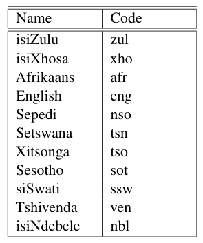
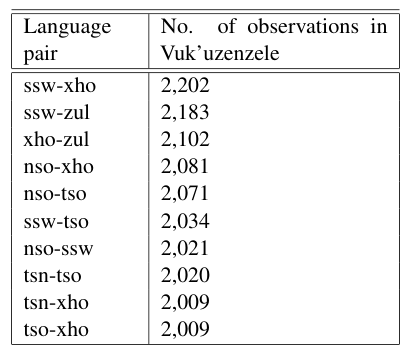
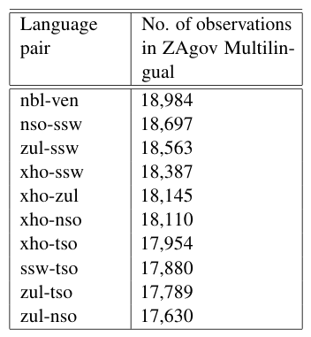
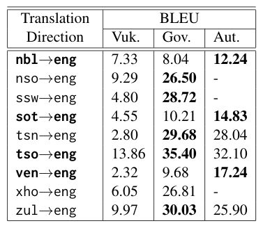
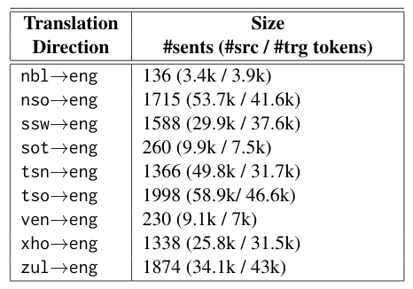
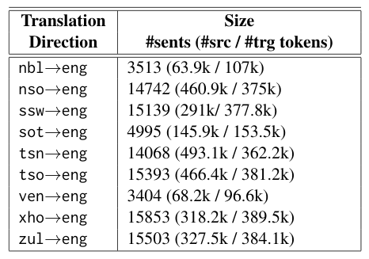
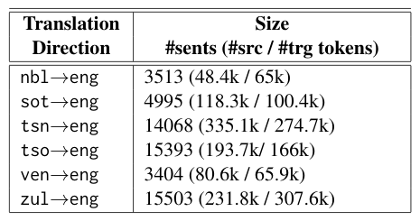

RAIL 2023Tafsiri ya mashine
Kutayarisha korasi za lugha nyingi za Vuk'uzenzele na ZA-gov-multilingual za Afrika Kusini
Tafsiri ya mashine, haijakaguliwa na binadamu. Makala asili ndiyo toleo la rejeo; sentensi zilizopigiwa mstari ni zile ambazo ukaguzi wa kiotomatiki haukuwa na uhakika nazo.
Proceedings of the Fourth workshop on Resources for African Indigenous Languages (RAIL 2023).
Tafsiri ya Ernst van Gassen (Arktos AI Lab), yenye leseni CC BY 4.0 kama makala asili. Matumizi tena yanaruhusiwa, ikiwemo ya kibiashara, kwa kutaja mwandishi. Waandishi asili hawajakagua wala kuidhinisha tafsiri hii.
Maandishi matupu ya kutumia tena, pamoja na leseni yake: Kiswahili · LESENI
Taasisi
Richard Lastrucci1, Isheanesu Dzingirai1, Jenalea Rajab2, Andani Madodonga1
Matimba Shingange1, Daniel Njini1, Vukosi Marivate1,3
1Department of Computer Science, University of Pretoria
2School of Computer Science and Applied Mathematics, University of the Witwatersrand
3Lelapa AI
Anwani za barua pepe zimeondolewa kwa sababu za faragha. Zinapatikana katika PDF asilia.
Muhtasari
Makala hii inatambulisha korasi mbili zenye mada ya serikali katika lugha mbalimbali za Afrika Kusini. Korasi zilikusanywa kwa kukusanya gazeti la Serikali ya Afrika Kusini (Vuk'uzenzele), pamoja na hotuba za serikali ya Afrika Kusini (ZA-gov-multilingual), ambazo zinatafsiriwa katika lugha rasmi zote 11 za Afrika Kusini. Korasi hizo zinaweza kutumika kwa wingi wa kazi za NLP zinazofuata. Korasi ziliundwa ili kuruhusu watafiti kuchunguza lugha inayotumika katika machapisho ya serikali ya Afrika Kusini, kwa lengo la kuelewa jinsi maafisa wa serikali ya Afrika Kusini wanavyowasiliana na wapiga kura wao.
Katika makala hii tunaangazia mchakato wa kukusanya, kusafisha na kufanya korasi zipatikane. Tunaunda korasi za sentensi sambamba kwa ajili ya kazi za Tafsiri ya Mashine ya Neva (NMT) kwa kutumia upachikaji wa Language-Agnostic Sentence Representations (LASER). Kwa sentensi hizi zilizolinganishwa kisha tunatoa viwango vya NMT kwa lugha 9 za asili kwa kurekebisha modeli ya lugha iliyofundishwa awali yenye lugha nyingi sana.
1 Utangulizi
Maendeleo ya utafiti wa Uchakataji wa Lugha Asilia (NLP) barani Afrika yanakwamishwa kutokana na uhaba wa data kwa ajili ya kufunza modeli kwa kazi mbalimbali za NLP (Nekoto et al., 2020) pamoja na upatikanaji wa vigezo na njia za kuzizalisha tena (Martinus na Abbott, 2019). Kwa Lugha nyingi za Afrika Kusini bado kuna changamoto kupata seti za data za kimaandishi zinazopatikana kwa urahisi (Marivate et al., 2020) hata kama kuna wazungumzaji wengi wa lugha hizo (Ranathunga na de Silva, 2022). Kuna haja ya kulenga katika uundaji wa rasilimali za NLP za lugha za kienyeji (Joshi et al., 2020).
Makala haya yanajenga juu ya kazi ya Autshumato (Groenewald na Fourie, 2009; Groenewald na du Plooy, 2010) kwa kuunda korasi sambamba zilizopangiliwa kiotomatiki kutoka kwa data za kimaandishi za serikali katika lugha rasmi 11 za Afrika Kusini. Ingawa mradi wa Autshumato ulilenga kuunda zana za tafsiri ya mashine kwa lugha tano za kiasili, korasi zilizotokana nazo zilikosa taarifa kuhusu asili au muktadha wake, hivyo kupunguza manufaa yake kwa kazi nyingine za NLP kama vile uainishaji, uundaji wa mada kwa muda na kazi nyingine zinazohitaji taarifa za muktadha wa maudhui. Mbinu yetu inatoa data pana zaidi inayoweza kusaidia wigo mpana wa matumizi ya NLP.
Imani yetu ni kwamba kuna fursa muhimu ya kuunda mchakato wa ukusanyaji wa data unaofaa mtumiaji zaidi ambao unaweza kudumishwa kwa urahisi na kutoa zana za uchimbaji kwa wengine. Ni muhimu kuhifadhi chanzo cha data na kukiunda kwa njia inayowezesha upanuzi. Lengo letu ni kuimarisha rasilimali za tafsiri ya mashine ya neva (NMT) katika kikoa cha data za serikali kwa kujumuisha lugha zote za kiasili na kupanua mwelekeo wa tafsiri zaidi ya Kiingereza kama lugha chanzo. Zaidi ya hayo, tunatambua umuhimu wa kutoa data iliyolingana katika lugha zote za Afrika Kusini zaidi ya Kiingereza.
Zaidi ya hayo, makala haya yanatanguliza seti za data za korasi sambamba katika lugha rasmi 11 za Afrika Kusini, zilizoundwa kutoka kwa data za maandishi zilizopatikana kutoka serikalini. Seti hizi za data zimeundwa ili kuwezesha uundaji wa miundo ya NMT. Korasi hizo zimepangwa kiotomatiki, na zinatarajiwa kutumika kama rasilimali muhimu kwa watafiti na wataalamu wanaofanya kazi katika uwanja wa ujifunzaji wa mashine.
Korasi sambamba zilizalishwa kwa kutumia visimbuzi vya LASER (Schwenk na Douze, 2017), kuwezesha ulinganishaji wa moja kwa moja wa data za sentensi zilizogawanywa vipande. Data hizo zilipatikana kutoka kwa vyanzo vya kuaminika kama vile magazeti na majarida ya kitaaluma na zinashughulikia mada mbalimbali zikiwemo afya, fedha, na siasa.
Pia tunatoa vigezo vya NMT kwa korasi sambamba kwa kuboresha modeli ya lugha nyingi kwa kiasi kikubwa (M2M100 (Fan et al., 2021)) tukijenga juu ya kazi ya Adelani et al. (2022).
Makala hii imeundwa kama ifuatavyo. Katika sehemu inayofuata, tunafafanua kwa kina seti za data ambazo tumeikusanya, ikiwa ni pamoja na mbinu ya ukusanyaji wake na taarifa zilizomo. Kisha tunaeleza jinsi tulivyopatanisha na kuunda korasi sambamba kwa kutumia seti hizi za data. Sehemu inayofuata inawasilisha majaribio yetu ya NMT na kutoa uchambuzi wa matokeo yaliyopatikana. Hatimaye, tunahitimisha makala kwa matokeo yetu na kutoa mapendekezo kwa utafiti wa baadaye.
2 Sehemu Kuu za Data
2.1 Korasi ya Lugha Nyingi ya Afrika Kusini ya Vuk'uzenzele
Seti ya data ya Vuk'uzenzele iliundwa kutokana na matoleo ya jarida la serikali ya Afrika Kusini Vuk'uzenzele. Kwa kuwa ni jarida, maandishi yanalenga hasa matukio ya sasa, siasa, burudani, na mada nyingine zinazohusiana na uchapishaji wa jarida. Seti ya data ya Vuk'uzenzele inatoa mtazamo wa kina wa lugha na mada za majadiliano nchini Afrika Kusini katika kipindi husika, ikiwapa watafiti ufahamu kuhusu historia na utamaduni wa Afrika Kusini. Kwa hivyo, seti ya data ya Vuk'uzenzele ni rasilimali tajiri kwa mtafiti yeyote anayependa kuchambua siasa za Afrika Kusini, matukio ya sasa, na utamaduni wa watu.
2.1.1 Uundaji wa Vuk'uzenzele
Data ghafi ya Vuk'uzenzele inakusanywa kutoka kwa matoleo ya PDF ya jarida hilo. Toleo kuu la Vuk'uzenzele liko katika lugha ya Kiingereza. Ni makala chache tu kati ya hizi za Kiingereza zinazotafsiriwa katika lugha nyingine 10 rasmi za Afrika Kusini (Afrikaans, isiNdebele, isiXhosa, IsiZulu, Sepedi, Sesotho, siSwati, Tshivenda, Xitsonga na Setswana). Kwa hivyo, tuliunda bomba la kazi ili kutambua ni makala zipi zinapaswa kutolewa kutoka kwa pdf ya kila lugha kutoka toleo maalum. Makala binafsi zilitolewa na kuwekwa kwenye faili za maandishi. Faili za maandishi zilizotolewa bado zina changamoto fulani kutokana na utoaji wa PDF. Ili kuzisafisha, mwanachama wa timu hupitia kila faili ya maandishi iliyotolewa na kuiunda kama ifuatavyo:
- Mstari wa 1: Kichwa cha makala (kwa lugha)
- Mstari wa 2: mstari tupu
- Mstari wa 3: Mwandishi wa makala (ikiwa anapatikana. Ikiwa hapatikani, chaguo-msingi ni Vukuzenzele Unnamed)
- Mstari wa 4: mstari tupu
- Mstari wa 5-mwisho: mwili wa makala
Data ni rahisi kuchanganua na kuibua taswira baada ya kupitiwa kwa mikono. Juhudi hiyo iliyohitaji nguvu kazi kubwa ilikuwa muhimu ili kutoa uchanganuzi wa kina na wenye maana wa maudhui ya jarida. Mchakato uliochukua muda mrefu wa upitiaji na uchimbaji wa kutumia mikono hatimaye ulikuwa na thamani, kwani unatoa fursa ya kuunda uelewa wa kina wa maudhui ndani ya Vuk'uzenzele. Kufikia wakati wa kuandika tuna matoleo 53 ya gazeti yanayoanzia Januari 2020 hadi Julai 2022. Nyongeza zaidi zitaongezwa kwa wakati na timu. Otomatiki zimejengwa ili kupakua na kuhifadhi PDF, hata hivyo juhudi za kutumia mikono bado zinahitajika ili kuchimbua na kutambua makala zilizotafsiriwa. Seti ya data, msimbo na vichakuzi otomatiki vinapatikana katika https://github.com/dsfsi/vukuzenzele-nlp na Zenodo (Marivate et al., 2023a). Tunaiweka katika muundo unaowawezesha watafiti wengine kuiongezea, kuichanganya na kuongeza juu yake (leseni ya CC-4.0-BY-SA kwa data na Leseni ya MIT kwa msimbo).
2.2 Korasi ya ZA-Gov Multilingual ya Afrika Kusini
Seti ya data ya korasi ya ZA-Gov Multilingual iliundwa kutokana na hotuba zilizofuata mikutano ya baraza la mawaziri la serikali ya SA. Kwa hivyo, seti ya data inabeba mada mbalimbali ikiwemo nishati, kazi, utoaji huduma, uhalifu, COVID, mahusiano ya kimataifa, mazingira, na masuala ya serikali kama vile uteuzi wa serikali, maamuzi ya baraza la mawaziri, n.k. Hii inatoa mwanga katika utendaji kazi wa serikali ya Afrika Kusini na jinsi ilivyoshughulikia changamoto mbalimbali, za ndani na za nje.
2.2.1 Uundaji wa ZA-Gov-multilingual
Data ghafi ya ZA-Gov Multilingual inakwaruzwa kutoka kwenye tovuti ya serikali ya Afrika Kusini (https://www.gov.za/), ambapo taarifa zote za baraza la mawaziri, na tafsiri zake, huchapishwa. Data ilitolewa na kupangwa katika muundo wa JSON. Mzigo wa JSON kwa kila rekodi ya hotuba:
- Tarehe,
- Datetime,
- Title (kwa Kiingereza),
- Url (url ya juu kwa hotuba),
- Mzigo wa lugha kwa kila lugha (eng, afr, nbl, xho, zul, nso, sep, tsn, ssw, ven, tso).
- Kichwa (katika lugha),
- Maandishi (katika lugha),
- Url (kwa tafsiri).
Muundo huu unafanya iwe rahisi kwa watafiti na wachambuzi kufanya kazi mbalimbali za uchakataji wa lugha asilia, uchimbaji wa data na ujifunzaji wa mashine kama vile uchambuzi wa hisia, uigaji wa mada, uainishaji, uigaji wa lugha na zaidi. Kwa mfano, kupitia uchambuzi wa hisia na uchimbaji wa maandishi, wachambuzi wanaweza kuchunguza maoni ya taarifa za wajumbe wa baraza la mawaziri na kufuatilia mabadiliko ya mada hizi kwa muda. Kufikia wakati wa kuandika, seti ya data ina taarifa 162 za baraza la mawaziri kuanzia 2 Mei 2013 hadi 1 Desemba 2022. Seti ya data itasasishwa kiotomatiki wakati taarifa mpya, zilizotafsiriwa, zinapatikana kwenye tovuti ya gov.za. Seti ya data, msimbo na vichakuzi vya kiotomatiki vinapatikana katika https://github.com/dsfsi/gov-za-multilingual na Zenodo (Marivate et al., 2023b). Tunaifanya ipatikane kwa namna ambayo watafiti wengine wanaweza kuipanua, kuichanganya na kuiongezea (leseni ya CC-4.0-BY-SA kwa data na Leseni ya MIT kwa msimbo).
3 Korasi kama msingi wa kazi nyingine za NLP na utafiti zaidi
Mbali na kusaidia uundaji wa miundo ya NMT (iliyojadiliwa katika sehemu inayofuata), seti zetu za data zina uwezo wa kutumika kama msingi wa kazi nyingine nyingi za NLP zaidi ya tafsiri. Tunaamini kwamba seti hizi za data zitakuwa rasilimali muhimu kwa ajili ya utafiti wa mawasiliano ya serikali ya Afrika Kusini, na kwamba zinaweza kutumika kwa uundaji wa moja kwa moja wa uainishaji/uainishaji wa nyaraka za lugha nyingi (Schwenk na Li, 2018), kurahisisha (Lu et al., 2021; Siddharthan, 2014; Martin et al., 2022), uchimbaji wa huluki (Tedeschi et al., 2021; Chen et al., 2018; Pappu et al., 2017; Emelyanov na Artemova, 2019), na kazi nyingine za NLP. Ili kupanua zaidi manufaa ya seti ya data, tunapendekeza kuangalia kazi kama vile Parallel Meaning Bank (Abzianidze et al., 2017), ambayo inaweza kutumika kama msukumo wa kuhamisha maarifa kutoka lugha moja hadi nyingine na kutoa vigezo vipya ambavyo vinaweza kusaidia Lugha za Afrika Kusini mwa Afrika zaidi ya Afrika Kusini. Tunatazamia seti hizi za data kuwa kianzio cha utafiti zaidi katika eneo la NLP ya lugha nyingi kwa lugha za Afrika Kusini na Lugha za Afrika.
4 Mbinu za Uchakataji na Ukusanyaji
Seti hizi za data ni korasi sambamba ya pande mbili ya lugha rasmi 11 za Afrika Kusini, ambazo zimeorodheshwa katika Jedwali 1 pamoja na msimbo wao wa ISO 639-2. Seti hizi za data zina maandishi yaliyoandikwa katika lugha rasmi za Afrika Kusini, zikiwemo Afrikaans, Kiingereza, isiNdebele, isiXhosa, isiZulu, siSwati, Sepedi, Xitsonga, siSwati, Tshivenda, na Setswana. Kwa hivyo, kuna njia 55 za kuunganisha lugha hizi kwa jozi, na kuzalisha korasi 55 tofauti katika kila moja ya seti za data. Seti ya data inatumia misimbo ya lugha ya ISO 639-2 katika utaratibu wake wa kutaja, yaani, 'aligned-afr-zul.csv'. Kwa asili ya ukusanyaji, baadhi ya seti za data zina rekodi zaidi kuliko nyingine, jambo ambalo linaweza kusababisha matokeo tofauti, yaani, ikiwa itatumika kwa NMT, basi modeli bora zaidi inaweza kutengenezwa kwa lugha mbili kutoka seti ya data yenye rekodi nyingi ikilinganishwa na ile yenye rekodi chache. Mkusanyiko huu wa data unaruhusu uchunguzi zaidi katika utata wa lugha na mazungumzo ya Afrika Kusini, ukitengeneza uwakilishi wa pande nyingi wa jinsi lugha inavyotumiwa na kufasiriwa nchini Afrika Kusini. Kupitia seti hizi za data, anuwai ya matumizi ya lugha nchini Afrika Kusini inaweza kuchunguzwa, ikitoa maarifa kuhusu jinsi lugha tofauti zinavyoingiliana.
Jedwali 1: Orodha ya Lugha yenye misimbo ya ISO 639-2

4.1 Uchakataji wa Awali
Uchakataji wa awali ulihitajika ili kuboresha data ghafi iliyokwaruzwa kabla ya usimbaji na upatanishi wa LASER. Hatua za uchakataji wa awali zimeorodheshwa hapa chini na zinatofautiana kidogo kwani data chanzi na mbinu ya ukwaruzaji ina matokeo kwenye data iliyopatikana. Kwa mfano, ZA-Gov-Multilinguals huhusisha vidokezo vingi vilivyowekwa ndani, yaani, 2.1.2, ambavyo vilihitaji kuondolewa, wakati kinyume chake data ya Vuk'uzenzele hutumia alama za vitone kwa kuorodhesha.
4.1.1 Vuk'uzenzele
Maandishi ghafi kutoka kwa data iliyokusanywa yalichakatwa awali kwa njia ifuatayo:
- Maandishi yaliwekwa kuwa herufi ndogo.
- Vistari na alama za vitone viliondolewa.
- Nafasi mbili, tabo, na mistari mipya zilibadilishwa na nafasi moja.
- Apostrofi ya kawaida, yaani, ", ilichukua nafasi ya apostrofi za Unicode.
4.1.2 ZA-Gov-multilingual
Maandishi ghafi kutoka kwa data iliyokusanywa yalichakatwa awali kwa njia ifuatayo:
- Kuondoa vitone (au nambari za tarakimu moja au nyingi) vilivyoanza mstari
- Kuingiza nukta baada ya mfululizo wa nambari katika muundo wa x · y.
- Kuongeza nukta baada ya mfululizo wa nambari katika muundo x.
- Kubadilisha mfululizo wa alama za uakifishaji, kama vile nukta, nukta mbili, nusu koloni, au mchanganyiko wa hizi, zikifuatiwa na herufi na nukta moja.
4.2 Upangaji wa Korasi
Mara tu baada ya kuchakatwa awali, maandishi yalipitishwa kwa kigawanyaji cha NLTK "punkt" ambacho kinarudisha vekta ya tokeni za sentensi. Sentensi za n zilizogawanywa katika tokeni zilitumwa kwa kisimbuzi cha LASER ambacho kinazisimba kuwa vekta za sentensi za n, kila moja ikiwa na urefu wa 1024. Vekta za sentensi zinalinganishwa na algoriti ya ufanano wa kosini ilitekelezwa ili kutoa alama kutoka 0 hadi 1 kuhusu ufanano wa vekta hizo mbili kama ilivyoelezwa katika sehemu ya 4.2.1.
4.2.1 Usimbaji wa LASER
Ili kulinganisha maandishi kwa ufanano, visimbuzi vya LASER vilitumika. LASER, ambayo inasimamia Language-Agnostic Sentence Representations, ni mradi wa utafiti wa Facebook AI Research. LASER inazalisha uwakilishi wa sentensi kwa kusimba sentensi kuwa vekta. Vekta hizo hutumika kama uwakilishi wa kimashine wa sentensi. Vekta hizo zinaweza kulinganishwa kwa kutumia ufanano wa kosini ambao hutoa alama kati ya sifuri na moja. Alama za kosini zilizo karibu na moja huonyesha ufanano wa juu. Alama hii imerekodiwa katika seti za data za LASER (zinazopatikana katika hazina ya seti ya data). Rekodi zilizopo katika kila seti ya data zenye alama zaidi ya 0.65, au ufanano wa 65%, zimeorodheshwa katika majedwali yafuatayo 2 na 3. Majedwali kamili yanayoonyesha idadi ya rekodi zilizopo katika seti zote za data yameonyeshwa kwenye README za hazina za seti ya data, https://github.com/dsfsi/gov-za-multilingual kwa ZA-Gov-Multilingual na https://github.com/dsfsi/vukuzenzele-nlp kwa Vuk'uzenzele.
Jedwali la 2: Seti kumi za data zenye rekodi nyingi zaidi zenye alama ya kosini kubwa kuliko au sawa na 0.65 katika Vuk'uzenzele.

Jedwali la 3: Seti kumi za data zenye rekodi nyingi zaidi zenye alama ya kosini kubwa kuliko au sawa na 0.65

4.3 Uchakataji Baadae
Kwa seti za data za LASER, sentensi chanzi, sentensi lengwa, na alama ya kosini kwa data iliyopangiliwa ziliandikwa kwenye faili ya csv kwa kutumia utaratibu wa kutaja 'aligned-{src_lang_code}- {tgt_lang_code}.csv', yaani 'aligned-afr-zul.csv'. Rejelea orodha ya lugha katika 1 kwa misimbo ya lugha iliyotumika kutaja seti za data.
Kwa seti za data zilizolinganishwa rahisi, sentensi chanzi na sentensi lengwa ziliandikwa kwenye faili ya csv kwa muundo uleule wa kutaja kama seti za data za LASER.
5 Vigezo vya NMT
Korasi ndogo za sentensi zilizolinganishwa, kwa Lugha za Afrika zenye rasilimali chache, zinakwamisha ubora wa modeli za NMT zinazofunzwa kutoka mwanzo (Martinus and Abbott, 2019; Nekoto et al., 2020; Adelani et al., 2022). Hivi karibuni Adelani et al. (2022) walishughulikia tatizo hili kwa kurekebisha vizuri modeli za lugha nyingi kwa kiwango kikubwa, ikiwemo modeli ya M2M100 (Fan et al., 2021), kwenye idadi ndogo ya sentensi zilizolinganishwa. Modeli ya M2M100 ni modeli ya lugha ya Nyingi-kwa-Nyingi isiyozingatia Kiingereza iliyofunzwa kutafsiri moja kwa moja kati ya lugha 100, ikiwemo lugha rasmi tano za Afrika Kusini (Fan et al., 2021). Adelani et al. (2022) walionyesha jinsi ya kutumia modeli hii kwa ufanisi kwa kiasi kidogo cha data, ili kuunda mifumo ya NMT kwa lugha na vikoa ambavyo havijajumuishwa katika mafunzo ya awali.
Kwa kujenga juu ya kazi yao, tunaunda vigezo vya msingi vya tafsiri kwa seti za data za Vuk'uzenzele na ZA-gov-multilingual, katika kikoa cha machapisho ya serikali, kwa kurekebisha vizuri modeli ya M2M100. Ili kutoa matokeo yetu katika muktadha na kwa madhumuni ya kulinganisha, pia tunarekebisha vizuri modeli ya M2M100 kwenye vikundi vidogo vya korasi sambamba zilizopo za Autshumato zilizopatikana kutoka Kituo cha Afrika Kusini cha Rasilimali za Lugha za Kidijitali (McKellar, (2021,2,2,2,0,2) (https://sadilar.org). Tunaelekeza juhudi zetu katika kutoa vigezo vya NMT kwa Lugha za Afrika zenye rasilimali chache katika seti za data, kwa hivyo tafsiri za Kiafrikana hazijajumuishwa kwa sababu ya upatikanaji wa juu kiasi wa seti za data za kidijitali katika lugha hii, na tunaacha hili kwa kazi ya baadaye.
5.1 Usindikaji wa awali
Seti za data zilizolinganishwa zilichakatwa ili kuondoa tafsiri zilizorudiwa na zinazokinzana (katika sentensi za chanzo na lengwa) kisha zikachanganywa ili kuondoa upendeleo wowote wa mpangilio kabla ya seti za mafunzo, majaribio na maendeleo kuundwa. Mgawanyo wa data unafafanuliwa kama 70% ya mafunzo, 20% ya majaribio na 10% ya seti za maendeleo. Kwa kulinganisha, modeli zote zinarekebishwa vizuri kwa kutumia mwelekeo wa tafsiri wa 'xxx-eng' ambapo 'xxx' inawakilisha lugha chanzo ya asili ya Kiafrika na 'eng' ni lengwa la tafsiri ya Kiingereza.
Korasi sambamba za Autshumato zinazopatikana (zilizotolewa kutoka rasilimali mbalimbali za serikali na utambazaji wa wavuti (Groenewald na Fourie, 2009)) zinalinganishwa kwa kikoa na korasi sambamba za ZA-gov-multilingual zilizoundwa, hata hivyo ukubwa wa seti za data kwa sasa ni mkubwa zaidi. Kwa hiyo tunatoa idadi sawa ya sentensi zilizopangiliwa zilizochakatwa awali kama zile za korasi za ZA-gov-multilingual katika mwelekeo wa tafsiri wa 'xxx-eng', kwa ulinganisho wa moja kwa moja wa matokeo ya NMT. Hesabu za sentensi na tokeni za korasi zilizotumika kwa ulinganishaji wa NMT zimetolewa katika Kiambatisho A.1 majedwali 5, 6 na 7.
5.2 Matokeo
Matokeo ya ulinganishaji wa kurekebisha vizuri kwa M2M100 kwa Vuk'uzenzele, ZA-gov-multilingual na vikundi vidogo vya korasi sambamba za Autshumato zinazopatikana yametolewa katika jedwali 4. Maelekezo ya tafsiri ya kurekebisha vizuri yametolewa, na lugha chanzo zozote ambazo hazikujumuishwa katika mafunzo ya awali ya M2M100 zimeangaziwa kwa madhumuni ya marejeleo. Zaidi ya hayo, matokeo ya alama ya juu zaidi ya BLEU yaliyofikiwa katika seti za data yameonyeshwa kwa herufi nzito. Matukio ambapo korasi sambamba za Autshumato hazikuwa zinapatikana au hazikuwepo kwa lugha fulani yameonyeshwa kwa alama ya '-'.
Jedwali 4: Alama za BLEU kwa Uhamishaji wa Lugha Nyingi kwa Kiwango Kikubwa kwenye tafsiri za xxx-eng kwa kutumia seti za data za Vuk'uzenzele (Vuk.), ZA-gov-multilingual (Gov.) na vikundi vidogo vya seti za data za Autshumato zinazopatikana (Aut.)

Kurekebisha vizuri kwenye seti za data za Vuk'uzenzele kulipata alama za jumla za chini zaidi za BLEU, hii inatarajiwa kutokana na ukubwa mdogo wa seti za data zilizopangiliwa ikilinganishwa na zile za seti za data za ZA-gov-multilingual na Autshumato. Alama za juu zaidi za BLEU zinasambazwa kwa njia isiyo thabiti kati ya miundo ya NMT ya ZA-gov-multilingual na Autshumato, huku miundo ya ZA-gov-multilingual ikipata alama ya juu zaidi kwa Setswana, Xitsonga na isiZulu. Hii inaweza kusababishwa na uteuzi nasibu wa seti ndogo kutoka kwa seti za data za Autshumato, na pia ni matokeo ya tofauti katika michanganyiko ya vyanzo na mbinu za kusafisha zilizotumiwa na mradi wa Autshumato wakati wa kuunda korasi zilizolinganishwa. Inabainishwa kuwa tofauti katika uteuzi wa seti ndogo zitatoa matokeo tofauti na uchambuzi wa kina umeachwa kwa kazi ya baadaye.
Tunapata matokeo ya juu zaidi ya kigezo kwa Xitsonga ('tso-eng') katika seti zote za data, ambayo ni lugha ambayo muundo wa M2M100 haujafunzwa awali, ikionyesha ufanisi wa Ujifunzaji hamishi kwa seti mpya za data za lugha yenye rasilimali chache.
Pia inabainishwa kuwa rasilimali za sasa za NMT kwa seti za data za Autshumato zinapatikana tu katika mwelekeo wa tafsiri wa 'eng-xxx' kwa Xitsonga, Setswana, Sepedi, Sesotho na isiZulu (Skosana na Mlambo, 2021). Kwa hiyo michango yetu inapanua rasilimali za tafsiri za kigezo (katika kikoa cha data za serikali) hadi isiNdebele, isiXhosa, siSwati na Tshivenda; na kupanua mwelekeo wa tafsiri zaidi ya Kiingereza kama lugha chanzo.
6 Hitimisho
Hatimaye, makala hii iliwasilisha korasi mbili za lugha nyingi ambazo zimelinganishwa kiotomatiki ili kuwezesha tafsiri ya maandishi kati ya lugha. Seti hizi za data zinachangia mkusanyiko unaopanuka wa korasi kwa ajili ya kufunza miundo ya NMT ya lugha za Kiafrika ambazo zimeachwa nje au zenye rasilimali pungufu katika utafiti wa kisasa wa NLP. Ni matumaini ya waandishi kwamba seti hizi za data zitasaidia katika kuunda modeli za NMT kwa Lugha za Afrika zenye rasilimali chache na kwamba modeli hizo zinaweza kutumika kuwezesha upatikanaji wa huduma za tafsiri, zikiwawezesha wazungumzaji na waandishi wa Kiafrika kuwasiliana kwa ufanisi zaidi katika lugha zao za asili. Pia inatarajiwa kwamba seti za data zitaimarisha utafiti wa NLP kuhusu wingilugha wa Lugha za Afrika na kuchangia uelewa wa lahaja mbalimbali zilizopo Afrika.
7 Mapungufu
Modeli za NMT zilizojadiliwa zimeundwa kwa ajili ya kuweka alama za kulinganisha kwenye seti za data zilizoelezwa na hazijajaribiwa kwa kina kwa ubora kwa madhumuni ya uzalishaji. Pia tulijaribu tu ufanisi wa kurekebisha vizuri modeli ya M2M100 kwa Kiingereza kama lugha lengwa na hatujapanua mifumo ya NMT kwa tafsiri kati ya Lugha za Afrika za asili za Afrika Kusini, kwa hiyo uwekaji alama zaidi wa kulinganisha bado unahitaji kutekelezwa. Tungependa kupanua upimaji ili kujumuisha seti ya tathmini iliyoundwa na (McKellar na Puttkammer, 2020), ambayo ina data (iliyotengwa kutoka kwa korasi za Autshumato) kwa lugha zote 11 rasmi za Afrika Kusini na inaweza kutoa ulinganisho sahihi zaidi wa modeli za NMT. Inabainishwa kwamba ingawa matokeo ya alama za BLEU yanaahidi, uchambuzi wa kiisimu wa kimaelezo bado unahitaji kufanywa kwenye modeli za tafsiri ili kubaini kama alama za BLEU kwa tafsiri za lugha fulani (yaani 'tso-eng') zinahusiana na tafsiri sahihi ndani ya kikoa chetu. Kama kazi ya baadaye tunatumaini kushirikiana na wanaisimu husika ili kuboresha ubora na ufanisi wa mifumo hiyo ya NMT kwa Lugha za Afrika Kusini (Skosana na Mlambo, 2021).
8 Taarifa ya Maadili
Seti za data zilizoundwa na kutumika kwa alama za kulinganisha za modeli za tafsiri zimechukuliwa pekee kutoka kwa rasilimali za serikali ya Afrika Kusini. Kwa hiyo inasisitizwa kwamba ikiwa modeli hizi zitatumika katika uzalishaji, zinaweza kupuuza baadhi ya miundo ya kijamii/ya kijamii na zitakuwa kiwakilishi cha chama kikuu cha kisiasa wakati seti za data zilipokusanywa (Bender et al., 2021). Pia tunabainisha kwamba modeli za benchmark na seti za data hazijapangwa ili kubaini upendeleo wowote uliopo. Kwa hivyo, upendeleo wowote uliopo katika mfumo unaweza kuwa na uwezo wa kudhuru makundi maalum, unapotumika katika kazi za uzalishaji za NLP za mkondo wa chini (Bender et al., 2021).
9 Shukrani
Tungependa kutambua ufadhili kutoka kwa ABSA Chair of Data Science, programu ya Google Research scholar, TensorFlow Award for Machine Learning Grant na NVIDIA Corporation hardware Grant. Shukrani nyingi kwa wakaguzi wote wasiojulikana wa RAIL kwa maoni yao ya thamani.
Maelezo
1 https://www.vukuzenzele.gov.za/
2 https://doi.org/10.5281/zenodo.7598539
3 https://doi.org/10.5281/zenodo.7635167
Marejeo
Lasha Abzianidze, Johannes Bjerva, Kilian Evang, Hessel Haagsma, Rik van Noord, Pierre Ludmann, DucDuy Nguyen, and Johan Bos. 2017. The parallel meaning bank: Towards a multilingual corpus of translations annotated with compositional meaning representations. In Proceedings of the 15th Conference of the European Chapter of the Association for Computational Linguistics: Volume 2, Short Papers, pages 242-247.
David Adelani, Jesujoba Alabi, Angela Fan, Julia Kreutzer, Xiaoyu Shen, Machel Reid, Dana Ruiter, Dietrich Klakow, Peter Nabende, Ernie Chang, Tajuddeen Gwadabe, Freshia Sackey, Bonaventure F. P. Dossou, Chris Emezue, Colin Leong, Michael Beukman, Shamsuddeen Muhammad, Guyo Jarso, Oreen Yousuf, Andre Niyongabo Rubungo, Gilles Hacheme, Eric Peter Wairagala, Muhammad Umair Nasir, Benjamin Ajibade, Tunde Ajayi, Yvonne Gitau, Jade Abbott, Mohamed Ahmed, Millicent Ochieng, Anuoluwapo Aremu, Perez Ogayo, Jonathan Mukiibi, Fatoumata Ouoba Kabore, Godson Kalipe, Derguene Mbaye, Allahsera Auguste Tapo, Victoire Memdjokam Koagne, Edwin Munkoh-Buabeng, Valencia Wagner, Idris Abdulmumin, Ayodele Awokoya, Happy Buzaaba, Blessing Sibanda, Andiswa Bukula, and Sam Manthalu. 2022. A few thousand translations go a long way! leveraging pre-trained models for African news translation. In Proceedings of the 2022 Conference of the North American Chapter of the Association for Computational Linguistics: Human Language Technologies, pages 3053-3070, Seattle, United States. Association for Computational Linguistics.
Emily M. Bender, Timnit Gebru, Angelina McMillanMajor, and Shmargaret Shmitchell. 2021. On the dangers of stochastic parrots: Can language models be too big? In Proceedings of the 2021 ACM Conference on Fairness, Accountability, and Transparency, FAccT '21, pages 610-623, New York, NY, USA. Association for Computing Machinery.
Muhao Chen, Yingtao Tian, Kai-Wei Chang, Steven Skiena, and Carlo Zaniolo. 2018. Co-training embeddings of knowledge graphs and entity descriptions for cross-lingual entity alignment. arXiv preprint arXiv: Arxiv-1806.06478.
Anton A. Emelyanov and E. Artemova. 2019. Multilingual named entity recognition using pre-trained embeddings, attention mechanism and ncrf. BSNLP@ACL.
Angela Fan, Shruti Bhosale, Holger Schwenk, Zhiyi Ma, Ahmed El-Kishky, Siddharth Goyal, Mandeep Baines, Onur Celebi, Guillaume Wenzek, Vishrav Chaudhary, et al. 2021. Beyond english-centric multilingual machine translation. Journal of Machine Learning Research, 22(107):1-48.
Hendrik J Groenewald and Liza du Plooy. 2010. Processing parallel text corpora for three south african language pairs in the autshumato project. AfLaT 2010, page 27.
Hendrik Johannes Groenewald and Wildrich Fourie. 2009. Introducing the autshumato integrated translation environment. In Proceedings of the 13th Annual conference of the European Association for Machine Translation.
Pratik Joshi, Sebastin Santy, Amar Budhiraja, Kalika Bali, and Monojit Choudhury. 2020. The state and fate of linguistic diversity and inclusion in the NLP world. In Proceedings of the 58th Annual Meeting of the Association for Computational Linguistics, pages 6282-6293, Online. Association for Computational Linguistics.
Xinyu Lu, Jipeng Qiang, Yun Li, Yunhao Yuan, and Yi Zhu. 2021. An unsupervised method for building sentence simplification corpora in multiple languages. Conference On Empirical Methods In Natural Language Processing.
Vukosi Marivate, Daniel Njini, Andani Madodonga, Richard Lastrucci, Isheanesu Dzingirai, and Jenalea Rajab. 2023a. The Vuk'uzenzele South African multilingual corpus.
Vukosi Marivate, Tshephisho Sefara, Vongani Chabalala, Keamogetswe Makhaya, Tumisho Mokgonyane, Rethabile Mokoena, and Abiodun Modupe. 2020. Investigating an approach for low resource language dataset creation, curation and classification: Setswana and sepedi. In Proceedings of the first workshop on Resources for African Indigenous Languages, pages 15-20.
Vukosi Marivate, Matimba Shingange, Richard Lastrucci, Isheanesu Dzingirai, and Jenalea Rajab. 2023b. The South African Gov-za multilingual corpus.
Louis Martin, Angela Fan, Eric Villemonte de la Clergerie, Antoine Bordes, and Benoît Sagot. 2022. Muss: Multilingual unsupervised sentence simplification by mining paraphrases. International Conference On Language Resources And Evaluation.
Laura Martinus and Jade Z Abbott. 2019. A focus on neural machine translation for african languages. arXiv preprint arXiv:1906.05685.
Cindy McKellar. (2020). Autshumato english-tshivenda parallel corpora, version 1.0, [multilingual text corpora: Aligned]. Retrieved From https://hdl.handle.net/20.500.12185/569.
Cindy McKellar. (2021). Autshumato englishisindebele parallel corpora, version 1.0, [multilingual text corpora: Aligned]. Retrieved From https://hdl.handle.net/20.500.12185/572.
Cindy McKellar. (2022)a. Autshumato english-isizulu parallel corpora, version 2.0, [multilingual text corpora: Aligned]. Retrieved From https://hdl.handle.net/20.500.12185/575.
Cindy McKellar. (2022)b. Autshumato english-sesotho parallel corpora, version 1.0, [multilingual text corpora: Aligned]. Retrieved From https://hdl.handle.net/20.500.12185/577.
Cindy McKellar. (2022)c. Autshumato englishsetswana parallel corpora, version 2.0, [multilingual text corpora: Aligned]. Retrieved From https://hdl.handle.net/20.500.12185/578.
Cindy McKellar. (2022)d. Autshumato english-xitsonga parallel corpora, version 2.0, [multilingual text corpora: Aligned]. Retrieved From https://hdl.handle.net/20.500.12185/579.
Cindy A McKellar and Martin J Puttkammer. 2020. Dataset for comparable evaluation of machine translation between 11 south african languages. Data Brief, 29:105146.
Wilhelmina Nekoto, Vukosi Marivate, Tshinondiwa Matsila, Timi Fasubaa, Taiwo Fagbohungbe, Solomon Oluwole Akinola, Shamsuddeen Muhammad, Salomon Kabongo Kabenamualu, Salomey Osei, Freshia Sackey, et al. 2020. Participatory research for low-resourced machine translation: A case study in african languages. In Findings of the Association for Computational Linguistics: EMNLP 2020, pages 2144-2160.
Aasish Pappu, Roi Blanco, Yashar Mehdad, Amanda Stent, and Kapil Thadani. 2017. Lightweight multilingual entity extraction and linking. In Proceedings of the Tenth ACM International Conference on Web Search and Data Mining, pages 365-374.
Surangika Ranathunga and Nisansa de Silva. 2022. Some languages are more equal than others: Probing deeper into the linguistic disparity in the NLP world. In Proceedings of the 2nd Conference of the Asia-Pacific Chapter of the Association for Computational Linguistics and the 12th International Joint Conference on Natural Language Processing (Volume 1: Long Papers), pages 823-848, Online only. Association for Computational Linguistics.
Holger Schwenk and Matthijs Douze. 2017. Learning joint multilingual sentence representations with neural machine translation. ACL 2017, page 157.
Holger Schwenk and Xian Li. 2018. A corpus for multilingual document classification in eight languages. International Conference On Language Resources And Evaluation.
Advaith Siddharthan. 2014. A survey of research on text simplification. ITL-International Journal of Applied Linguistics, 165(2):259-298.
Nomsa Skosana and Respect Mlambo. 2021. A brief study of the autshumato machine translation web service for south african languages. Literator, 42(1):7.
Simone Tedeschi, Valentino Maiorca, Niccolò Campolungo, Francesco Cecconi, and Roberto Navigli. 2021. WikiNEuRal: Combined neural and knowledge-based silver data creation for multilingual NER. In Findings of the Association for Computational Linguistics: EMNLP 2021, pages 2521-2533, Punta Cana, Dominican Republic. Association for Computational Linguistics.
A Kiambatisho
A.1 Takwimu za Data
Takwimu za data kwa seti za data zilizotumika kwa upimaji wa NMT zimetolewa katika Jedwali 5, 6 na 7.
Jedwali 5: Sifa za data ya tafsiri kwa seti za data za Vuk'uzenzele (Vuk.)

Jedwali 6: Sifa za data ya tafsiri kwa seti za data za ZA-gov-multilingual (Gov.)

Jedwali 7: Sifa za data ya tafsiri kwa vikundi vidogo vya seti za data za Autshumato (Aut.) zinazopatikana

English na Kiswahili
Preparing the Vuk’uzenzele and ZA-gov-multilingual South African multilingual corpora
Kutayarisha korasi za lugha nyingi za Vuk'uzenzele na ZA-gov-multilingual za Afrika Kusini
Affiliations
Richard Lastrucci1, Isheanesu Dzingirai1, Jenalea Rajab2, Andani Madodonga1,
Matimba Shingange1, Daniel Njini1, Vukosi Marivate1,3
1Department of Computer Science, University of Pretoria
2School of Computer Science and Applied Mathematics, University of the Witwatersrand
3Lelapa AI
, , ,
, ,
Taasisi
Richard Lastrucci1, Isheanesu Dzingirai1, Jenalea Rajab2, Andani Madodonga1,
Matimba Shingange1, Daniel Njini1, Vukosi Marivate1,3
1Department of Computer Science, University of Pretoria
2School of Computer Science and Applied Mathematics, University of the Witwatersrand
3Lelapa AI
, , ,
, ,
Abstract
Muhtasari
This paper introduces two multilingual government themed corpora in various South African languages. The corpora were collected by gathering the South African Government newspaper (Vuk'uzenzele), as well as South African government speeches (ZA-gov-multilingual), that are translated into all 11 South African official languages. The corpora can be used for a myriad of downstream NLP tasks. The corpora were created to allow researchers to study the language used in South African government publications, with a focus on understanding how South African government officials communicate with their constituents.
Makala hii inatambulisha korasi mbili zenye mada ya serikali katika lugha mbalimbali za Afrika Kusini. Korasi zilikusanywa kwa kukusanya gazeti la Serikali ya Afrika Kusini (Vuk'uzenzele), pamoja na hotuba za serikali ya Afrika Kusini (ZA-gov-multilingual), ambazo zinatafsiriwa katika lugha rasmi zote 11 za Afrika Kusini. Korasi hizo zinaweza kutumika kwa wingi wa kazi za NLP zinazofuata. Korasi ziliundwa ili kuruhusu watafiti kuchunguza lugha inayotumika katika machapisho ya serikali ya Afrika Kusini, kwa lengo la kuelewa jinsi maafisa wa serikali ya Afrika Kusini wanavyowasiliana na wapiga kura wao.
In this paper we highlight the process of gathering, cleaning and making available the corpora. We create parallel sentence corpora for Neural Machine Translation (NMT) tasks using Language-Agnostic Sentence Representations (LASER) embeddings. With these aligned sentences we then provide NMT benchmarks for 9 indigenous languages by fine-tuning a massively multilingual pre-trained language model.
Katika makala hii tunaangazia mchakato wa kukusanya, kusafisha na kufanya korasi zipatikane. Tunaunda korasi za sentensi sambamba kwa ajili ya kazi za Tafsiri ya Mashine ya Neva (NMT) kwa kutumia upachikaji wa Language-Agnostic Sentence Representations (LASER). Kwa sentensi hizi zilizolinganishwa kisha tunatoa viwango vya NMT kwa lugha 9 za asili kwa kurekebisha modeli ya lugha iliyofundishwa awali yenye lugha nyingi sana.
1 Introduction
1 Utangulizi
The advancement of Natural Language Processing (NLP) research in Africa is impeded due to the scarcity of data for training models for various NLP tasks (Nekoto et al., 2020) as well as availability of benchmarks and ways to reproduce them (Martinus and Abbott, 2019). For many South African languages there are still challenges finding easily available textual datasets (Marivate et al., 2020) even if there are many speakers for those languages (Ranathunga and de Silva, 2022). There is a need to focus on development of local language (Joshi et al., 2020) NLP resources.
Maendeleo ya utafiti wa Uchakataji wa Lugha Asilia (NLP) barani Afrika yanakwamishwa kutokana na uhaba wa data kwa ajili ya kufunza modeli kwa kazi mbalimbali za NLP (Nekoto et al., 2020) pamoja na upatikanaji wa vigezo na njia za kuzizalisha tena (Martinus na Abbott, 2019). Kwa Lugha nyingi za Afrika Kusini bado kuna changamoto kupata seti za data za kimaandishi zinazopatikana kwa urahisi (Marivate et al., 2020) hata kama kuna wazungumzaji wengi wa lugha hizo (Ranathunga na de Silva, 2022). Kuna haja ya kulenga katika uundaji wa rasilimali za NLP za lugha za kienyeji (Joshi et al., 2020).
This paper builds upon the work of Autshumato (Groenewald and Fourie, 2009; Groenewald and du Plooy, 2010) by creating automatically aligned parallel corpora from government textual data in the 11 official languages of South Africa. While the Autshumato project focused on creating Machine Translation tools for five indigenous languages, the resulting corpora lacked information about its origin or context, limiting its usefulness for other NLP tasks such as categorisation, topic modelling over time and other tasks that require contextual information of the content. Our approach provides more comprehensive data that can support a wider range of NLP applications.
Makala haya yanajenga juu ya kazi ya Autshumato (Groenewald na Fourie, 2009; Groenewald na du Plooy, 2010) kwa kuunda korasi sambamba zilizopangiliwa kiotomatiki kutoka kwa data za kimaandishi za serikali katika lugha rasmi 11 za Afrika Kusini. Ingawa mradi wa Autshumato ulilenga kuunda zana za tafsiri ya mashine kwa lugha tano za kiasili, korasi zilizotokana nazo zilikosa taarifa kuhusu asili au muktadha wake, hivyo kupunguza manufaa yake kwa kazi nyingine za NLP kama vile uainishaji, uundaji wa mada kwa muda na kazi nyingine zinazohitaji taarifa za muktadha wa maudhui. Mbinu yetu inatoa data pana zaidi inayoweza kusaidia wigo mpana wa matumizi ya NLP.
Our belief is that there is a significant opportunity to create a more user-friendly data collection process that can be easily maintained and provide extraction tools for others. It is essential to preserve the data source and structure it in a way that enables extensions. Our goal is to enhance Neural Machine Translation (NMT) resources in the government data domain by including all indigenous languages and broadening the translation directions beyond English as the source language. Additionally, we recognise the importance of providing aligned data across all South African languages beyond English.
Imani yetu ni kwamba kuna fursa muhimu ya kuunda mchakato wa ukusanyaji wa data unaofaa mtumiaji zaidi ambao unaweza kudumishwa kwa urahisi na kutoa zana za uchimbaji kwa wengine. Ni muhimu kuhifadhi chanzo cha data na kukiunda kwa njia inayowezesha upanuzi. Lengo letu ni kuimarisha rasilimali za tafsiri ya mashine ya neva (NMT) katika kikoa cha data za serikali kwa kujumuisha lugha zote za kiasili na kupanua mwelekeo wa tafsiri zaidi ya Kiingereza kama lugha chanzo. Zaidi ya hayo, tunatambua umuhimu wa kutoa data iliyolingana katika lugha zote za Afrika Kusini zaidi ya Kiingereza.
Further, this paper introduces parallel corpora datasets in the 11 official languages of South Africa, created from text data obtained from the government. These datasets are designed to facilitate the development of NMT models. The corpora are automatically aligned, and are expected to serve as a valuable resource for researchers and practitioners working in the field of machine learning.
Zaidi ya hayo, makala haya yanatanguliza seti za data za korasi sambamba katika lugha rasmi 11 za Afrika Kusini, zilizoundwa kutoka kwa data za maandishi zilizopatikana kutoka serikalini. Seti hizi za data zimeundwa ili kuwezesha uundaji wa miundo ya NMT. Korasi hizo zimepangwa kiotomatiki, na zinatarajiwa kutumika kama rasilimali muhimu kwa watafiti na wataalamu wanaofanya kazi katika uwanja wa ujifunzaji wa mashine.
The parallel corpora were generated using LASER encoders (Schwenk and Douze, 2017), facilitating the one-to-one alignment of tokenised sentence data. The data was sourced from credible sources such as newspapers and academic journals and covers diverse topics including health, finance, and politics.
Korasi sambamba zilizalishwa kwa kutumia visimbuzi vya LASER (Schwenk na Douze, 2017), kuwezesha ulinganishaji wa moja kwa moja wa data za sentensi zilizogawanywa vipande. Data hizo zilipatikana kutoka kwa vyanzo vya kuaminika kama vile magazeti na majarida ya kitaaluma na zinashughulikia mada mbalimbali zikiwemo afya, fedha, na siasa.
We also provide NMT benchmarks for the parallel corpora by fine-tuning a massively multilingual model (M2M100 (Fan et al., 2021)) building on the work of Adelani et al. (2022).
Pia tunatoa vigezo vya NMT kwa korasi sambamba kwa kuboresha modeli ya lugha nyingi kwa kiasi kikubwa (M2M100 (Fan et al., 2021)) tukijenga juu ya kazi ya Adelani et al. (2022).
This paper is structured as follows. In the following section, we detail the datasets that we have compiled, including their compilation methodology and the information they contain. We then describe how we have aligned and created parallel corpora using these datasets. The subsequent section presents our NMT experiments and provides an analysis of the results obtained. Finally, we conclude the paper with our findings and make recommendations for future research.
Makala hii imeundwa kama ifuatavyo. Katika sehemu inayofuata, tunafafanua kwa kina seti za data ambazo tumeikusanya, ikiwa ni pamoja na mbinu ya ukusanyaji wake na taarifa zilizomo. Kisha tunaeleza jinsi tulivyopatanisha na kuunda korasi sambamba kwa kutumia seti hizi za data. Sehemu inayofuata inawasilisha majaribio yetu ya NMT na kutoa uchambuzi wa matokeo yaliyopatikana. Hatimaye, tunahitimisha makala kwa matokeo yetu na kutoa mapendekezo kwa utafiti wa baadaye.
2 Main Datasets
2 Sehemu Kuu za Data
2.1 The Vuk'uzenzele South African Multilingual Corpus
2.1 Korasi ya Lugha Nyingi ya Afrika Kusini ya Vuk'uzenzele
The Vuk'uzenzele dataset was constructed from editions of the South African government magazine Vuk'uzenzele. Being a magazine, the text focuses mainly on current events, politics, entertainment, and other topics related to a magazine publication. The Vuk'uzenzele dataset provides a comprehensive view of the language and topics of discussion in South Africa during the respective period, giving researchers insight into the history and culture of South Africa. The Vuk'uzenzele dataset is thus a rich resource for any researcher wanting to analyse South African politics, current events, and popular culture.
Seti ya data ya Vuk'uzenzele iliundwa kutokana na matoleo ya jarida la serikali ya Afrika Kusini Vuk'uzenzele. Kwa kuwa ni jarida, maandishi yanalenga hasa matukio ya sasa, siasa, burudani, na mada nyingine zinazohusiana na uchapishaji wa jarida. Seti ya data ya Vuk'uzenzele inatoa mtazamo wa kina wa lugha na mada za majadiliano nchini Afrika Kusini katika kipindi husika, ikiwapa watafiti ufahamu kuhusu historia na utamaduni wa Afrika Kusini. Kwa hivyo, seti ya data ya Vuk'uzenzele ni rasilimali tajiri kwa mtafiti yeyote anayependa kuchambua siasa za Afrika Kusini, matukio ya sasa, na utamaduni wa watu.
2.1.1 Creation of Vuk'uzenzele
2.1.1 Uundaji wa Vuk'uzenzele
The raw Vuk'uzenzele data is scraped from PDF editions of the magazine. The main Vuk'uzenzele edition is in the English language. Only a few of these English articles are translated into the other 10 official South African languages (Afrikaans, isiNdebele, isiXhosa, IsiZulu, Sepedi, Sesotho, siSwati, Tshivenda, Xitsonga and Setswana). As such, we created a pipeline to identify which articles should be extracted from each language pdf from a specific edition. Individual articles were extracted and placed into text files. The extracted text files still have some challenges due to PDF extraction. To clean it, a team member goes through each extracted text file and formats it as follows:
Data ghafi ya Vuk'uzenzele inakusanywa kutoka kwa matoleo ya PDF ya jarida hilo. Toleo kuu la Vuk'uzenzele liko katika lugha ya Kiingereza. Ni makala chache tu kati ya hizi za Kiingereza zinazotafsiriwa katika lugha nyingine 10 rasmi za Afrika Kusini (Afrikaans, isiNdebele, isiXhosa, IsiZulu, Sepedi, Sesotho, siSwati, Tshivenda, Xitsonga na Setswana). Kwa hivyo, tuliunda bomba la kazi ili kutambua ni makala zipi zinapaswa kutolewa kutoka kwa pdf ya kila lugha kutoka toleo maalum. Makala binafsi zilitolewa na kuwekwa kwenye faili za maandishi. Faili za maandishi zilizotolewa bado zina changamoto fulani kutokana na utoaji wa PDF. Ili kuzisafisha, mwanachama wa timu hupitia kila faili ya maandishi iliyotolewa na kuiunda kama ifuatavyo:
Line 1: Title of article (in language)
Mstari wa 1: Kichwa cha makala (kwa lugha)
Line 2: empty line
Mstari wa 2: mstari tupu
Line 3: Author of article (if available. If not, defaults to Vukuzenzele Unnamed)
Mstari wa 3: Mwandishi wa makala (ikiwa anapatikana. Ikiwa hapatikani, chaguo-msingi ni Vukuzenzele Unnamed)
Line 4: empty line
Mstari wa 4: mstari tupu
Line 5-end: body of article
Mstari wa 5-mwisho: mwili wa makala
The data is easier to analyse and visualise after being manually reviewed. The labour-intensive effort was necessary to provide a comprehensive and meaningful analysis of the magazine's content. The time-consuming process of manual review and extraction was ultimately worth it, as it provides an opportunity to create a deeper understanding of the content within Vuk'uzenzele. As of writing we have 53 editions of the newspaper spanning January 2020 to July 2022. More additions will be added in time by the team. Automations have been built to download and archive the PDFs, however manual effort is still required to extract and identify translated articles. The dataset, code and automated scrapers are available at at https://github.com/dsfsi/vukuzenzele-nlp and Zenodo (Marivate et al., 2023a). We make it available in a format that allows other researchers to extend, remix and add onto it (CC-4.0-BY-SA licence for data and MIT License for code).
Data ni rahisi kuchanganua na kuibua taswira baada ya kupitiwa kwa mikono. Juhudi hiyo iliyohitaji nguvu kazi kubwa ilikuwa muhimu ili kutoa uchanganuzi wa kina na wenye maana wa maudhui ya jarida. Mchakato uliochukua muda mrefu wa upitiaji na uchimbaji wa kutumia mikono hatimaye ulikuwa na thamani, kwani unatoa fursa ya kuunda uelewa wa kina wa maudhui ndani ya Vuk'uzenzele. Kufikia wakati wa kuandika tuna matoleo 53 ya gazeti yanayoanzia Januari 2020 hadi Julai 2022. Nyongeza zaidi zitaongezwa kwa wakati na timu. Otomatiki zimejengwa ili kupakua na kuhifadhi PDF, hata hivyo juhudi za kutumia mikono bado zinahitajika ili kuchimbua na kutambua makala zilizotafsiriwa. Seti ya data, msimbo na vichakuzi otomatiki vinapatikana katika https://github.com/dsfsi/vukuzenzele-nlp na Zenodo (Marivate et al., 2023a). Tunaiweka katika muundo unaowawezesha watafiti wengine kuiongezea, kuichanganya na kuongeza juu yake (leseni ya CC-4.0-BY-SA kwa data na Leseni ya MIT kwa msimbo).
2.2 The ZA-Gov Multilingual South African corpus
2.2 Korasi ya ZA-Gov Multilingual ya Afrika Kusini
The ZA-Gov Multilingual corpus dataset was constructed from the speeches following cabinet meetings of the SA government. As such, the dataset carries a variety of topics including energy, labour, service delivery, crime, COVID, international relations, the environment, and government affairs such as government appointments, cabinet decisions, etc. This provides an eye into the workings of the South African government and how it has dealt with various challenges, both internal and external.
Seti ya data ya korasi ya ZA-Gov Multilingual iliundwa kutokana na hotuba zilizofuata mikutano ya baraza la mawaziri la serikali ya SA. Kwa hivyo, seti ya data inabeba mada mbalimbali ikiwemo nishati, kazi, utoaji huduma, uhalifu, COVID, mahusiano ya kimataifa, mazingira, na masuala ya serikali kama vile uteuzi wa serikali, maamuzi ya baraza la mawaziri, n.k. Hii inatoa mwanga katika utendaji kazi wa serikali ya Afrika Kusini na jinsi ilivyoshughulikia changamoto mbalimbali, za ndani na za nje.
2.2.1 Creation of ZA-Gov-multilingual
2.2.1 Uundaji wa ZA-Gov-multilingual
The raw ZA-Gov Multilingual data is scraped from the the South African government website (https://www.gov.za/), where all cabinet statements, and their translations, are posted. The data was extracted and structured into a JSON format. The JSON payload for each speech records:
Data ghafi ya ZA-Gov Multilingual inakwaruzwa kutoka kwenye tovuti ya serikali ya Afrika Kusini (https://www.gov.za/), ambapo taarifa zote za baraza la mawaziri, na tafsiri zake, huchapishwa. Data ilitolewa na kupangwa katika muundo wa JSON. Mzigo wa JSON kwa kila rekodi ya hotuba:
Date,
Tarehe,
Datetime,
Datetime,
Title (in English),
Title (kwa Kiingereza),
Url (top url for speech),
Url (url ya juu kwa hotuba),
Language payload for each language (eng, afr, nbl, xho, zul, nso, sep, tsn, ssw, ven, tso).
Mzigo wa lugha kwa kila lugha (eng, afr, nbl, xho, zul, nso, sep, tsn, ssw, ven, tso).
Title (in language),
Kichwa (katika lugha),
Text (in language),
Maandishi (katika lugha),
Url (for the translation).
Url (kwa tafsiri).
This structure makes it convenient for researchers and analysts to perform various natural language processing, data mining and machine learning tasks such as sentiment analysis, topic modelling, categorisation, language modelling and more. For instance, through sentiment analysis and text mining, analysts can investigate opinions of cabinet members' statements and track the evolution of these topics over time. As of writing, the dataset contains 162 cabinet statements spanning 2 May 2013 to 1 December 2022. The dataset will update automatically when new, translated, statements are available on the gov.za website. The dataset, code and automated scrapers are available at at https://github.com/dsfsi/gov-za-multilingual and Zenodo (Marivate et al., 2023b). We make it available in such a way that other researchers can extend, remix and add onto it (CC-4.0-BY-SA licence for data and MIT License for code).
Muundo huu unafanya iwe rahisi kwa watafiti na wachambuzi kufanya kazi mbalimbali za uchakataji wa lugha asilia, uchimbaji wa data na ujifunzaji wa mashine kama vile uchambuzi wa hisia, uigaji wa mada, uainishaji, uigaji wa lugha na zaidi. Kwa mfano, kupitia uchambuzi wa hisia na uchimbaji wa maandishi, wachambuzi wanaweza kuchunguza maoni ya taarifa za wajumbe wa baraza la mawaziri na kufuatilia mabadiliko ya mada hizi kwa muda. Kufikia wakati wa kuandika, seti ya data ina taarifa 162 za baraza la mawaziri kuanzia 2 Mei 2013 hadi 1 Desemba 2022. Seti ya data itasasishwa kiotomatiki wakati taarifa mpya, zilizotafsiriwa, zinapatikana kwenye tovuti ya gov.za. Seti ya data, msimbo na vichakuzi vya kiotomatiki vinapatikana katika https://github.com/dsfsi/gov-za-multilingual na Zenodo (Marivate et al., 2023b). Tunaifanya ipatikane kwa namna ambayo watafiti wengine wanaweza kuipanua, kuichanganya na kuiongezea (leseni ya CC-4.0-BY-SA kwa data na Leseni ya MIT kwa msimbo).
3 The corpora as a foundation for other NLP tasks and further study
3 Korasi kama msingi wa kazi nyingine za NLP na utafiti zaidi
In addition to supporting the creation of NMT models (discussed in the proceeding section), our datasets have the potential to serve as a foundation for many other NLP tasks beyond translation. We believe that these datasets will be a valuable resource for the study of South African government communication, and that it can be used for direct creation of multilingual document categorisation/classification (Schwenk and Li, 2018), simplification (Lu et al., 2021; Siddharthan, 2014; Martin et al., 2022), entity extraction (Tedeschi et al., 2021; Chen et al., 2018; Pappu et al., 2017; Emelyanov and Artemova, 2019), and other NLP tasks. To further extend the dataset's usefulness, we recommend looking at work such as the Parallel Meaning Bank (Abzianidze et al., 2017), which can act as an inspiration for transferring knowledge from one language to another and provide new benchmarks that may be helpful for Southern African languages beyond South Africa. We envision these datasets as a starting point for further research in the area of multilingual NLP for South African and African languages.
Mbali na kusaidia uundaji wa miundo ya NMT (iliyojadiliwa katika sehemu inayofuata), seti zetu za data zina uwezo wa kutumika kama msingi wa kazi nyingine nyingi za NLP zaidi ya tafsiri. Tunaamini kwamba seti hizi za data zitakuwa rasilimali muhimu kwa ajili ya utafiti wa mawasiliano ya serikali ya Afrika Kusini, na kwamba zinaweza kutumika kwa uundaji wa moja kwa moja wa uainishaji/uainishaji wa nyaraka za lugha nyingi (Schwenk na Li, 2018), kurahisisha (Lu et al., 2021; Siddharthan, 2014; Martin et al., 2022), uchimbaji wa huluki (Tedeschi et al., 2021; Chen et al., 2018; Pappu et al., 2017; Emelyanov na Artemova, 2019), na kazi nyingine za NLP. Ili kupanua zaidi manufaa ya seti ya data, tunapendekeza kuangalia kazi kama vile Parallel Meaning Bank (Abzianidze et al., 2017), ambayo inaweza kutumika kama msukumo wa kuhamisha maarifa kutoka lugha moja hadi nyingine na kutoa vigezo vipya ambavyo vinaweza kusaidia Lugha za Afrika Kusini mwa Afrika zaidi ya Afrika Kusini. Tunatazamia seti hizi za data kuwa kianzio cha utafiti zaidi katika eneo la NLP ya lugha nyingi kwa lugha za Afrika Kusini na Lugha za Afrika.
4 Methods for Processing and Compilation
4 Mbinu za Uchakataji na Ukusanyaji
The datasets are a two way parallel corpus of the 11 official languages of South Africa, which are listed in Table 1 with their corresponding ISO 639-2code. The datasets contain texts written in the official languages of South Africa, including Afrikaans, English, isiNdebele, isiXhosa, isiZulu, siSwati, Sepedi, Xitsonga, siSwati, Tshivenda, and Setswana. As such, there are 55 ways of combining these languages into pairs, producing 55 distinct corpora in each of the datasets. The dataset uses the ISO 639-2 language codes in its naming convention, i.e., 'aligned-afr-zul.csv'. By nature of compilation, some datasets have more observations than others, which could lead to varying results, i.e., if used for NMT, then a better model can be produced for two languages from a dataset with more observations as opposed to one with fewer observations. This compilation of data allows for further exploration into the complexities of South African language and discourse, creating a multi-dimensional representation of how language is used and interpreted in South Africa. Through these datasets, the range of language usage in South Africa can be explored, providing insights into how different languages interact.
Seti hizi za data ni korasi sambamba ya pande mbili ya lugha rasmi 11 za Afrika Kusini, ambazo zimeorodheshwa katika Jedwali 1 pamoja na msimbo wao wa ISO 639-2. Seti hizi za data zina maandishi yaliyoandikwa katika lugha rasmi za Afrika Kusini, zikiwemo Afrikaans, Kiingereza, isiNdebele, isiXhosa, isiZulu, siSwati, Sepedi, Xitsonga, siSwati, Tshivenda, na Setswana. Kwa hivyo, kuna njia 55 za kuunganisha lugha hizi kwa jozi, na kuzalisha korasi 55 tofauti katika kila moja ya seti za data. Seti ya data inatumia misimbo ya lugha ya ISO 639-2 katika utaratibu wake wa kutaja, yaani, 'aligned-afr-zul.csv'. Kwa asili ya ukusanyaji, baadhi ya seti za data zina rekodi zaidi kuliko nyingine, jambo ambalo linaweza kusababisha matokeo tofauti, yaani, ikiwa itatumika kwa NMT, basi modeli bora zaidi inaweza kutengenezwa kwa lugha mbili kutoka seti ya data yenye rekodi nyingi ikilinganishwa na ile yenye rekodi chache. Mkusanyiko huu wa data unaruhusu uchunguzi zaidi katika utata wa lugha na mazungumzo ya Afrika Kusini, ukitengeneza uwakilishi wa pande nyingi wa jinsi lugha inavyotumiwa na kufasiriwa nchini Afrika Kusini. Kupitia seti hizi za data, anuwai ya matumizi ya lugha nchini Afrika Kusini inaweza kuchunguzwa, ikitoa maarifa kuhusu jinsi lugha tofauti zinavyoingiliana.
Table 1: Language List with ISO 639-2 codes
Jedwali 1: Orodha ya Lugha yenye misimbo ya ISO 639-2
4.1 Preprocessing
4.1 Uchakataji wa Awali
Preprocessing was required to refine the raw scraped data prior to LASER encoding and alignment. The preprocessing steps are listed below and differ slightly as the source data and method of scraping has an outcome on the data obtained. For example, ZA-Gov-Multilinguals involve a lot of nested points, i.e., 2.1.2, which needed to be removed, while in contrast the Vuk'uzenzele data uses bullet points for listing.
Uchakataji wa awali ulihitajika ili kuboresha data ghafi iliyokwaruzwa kabla ya usimbaji na upatanishi wa LASER. Hatua za uchakataji wa awali zimeorodheshwa hapa chini na zinatofautiana kidogo kwani data chanzi na mbinu ya ukwaruzaji ina matokeo kwenye data iliyopatikana. Kwa mfano, ZA-Gov-Multilinguals huhusisha vidokezo vingi vilivyowekwa ndani, yaani, 2.1.2, ambavyo vilihitaji kuondolewa, wakati kinyume chake data ya Vuk'uzenzele hutumia alama za vitone kwa kuorodhesha.
4.1.1 Vuk'uzenzele
4.1.1 Vuk'uzenzele
The raw text from the collected data was pre-processed in the following way:
Maandishi ghafi kutoka kwa data iliyokusanywa yalichakatwa awali kwa njia ifuatayo:
The text was set to lowercase.
Maandishi yaliwekwa kuwa herufi ndogo.
Hyphens and bullet points were removed.
Vistari na alama za vitone viliondolewa.
Double spaces, tabs, and newlines were replaced with a single space.
Nafasi mbili, tabo, na mistari mipya zilibadilishwa na nafasi moja.
The standard apostrophe, i.e., ", took the place of Unicode apostrophes.
Apostrofi ya kawaida, yaani, ", ilichukua nafasi ya apostrofi za Unicode.
4.1.2 ZA-Gov-multilingual
4.1.2 ZA-Gov-multilingual
The raw text from the collected data was pre-processed in the following way:
Maandishi ghafi kutoka kwa data iliyokusanywa yalichakatwa awali kwa njia ifuatayo:
Removing the dots (or single- or multi-digit numbers) that began a line
Kuondoa vitone (au nambari za tarakimu moja au nyingi) vilivyoanza mstari
Inserting a period after a series of numbers in the format x · y.
Kuingiza nukta baada ya mfululizo wa nambari katika muundo wa x · y.
Adding a period after a string of numbers in the format x.
Kuongeza nukta baada ya mfululizo wa nambari katika muundo x.
Replacing a sequence of punctuation marks, such as a period, colon, semi-colon, or a combination of these, followed by a letter with a single period.
Kubadilisha mfululizo wa alama za uakifishaji, kama vile nukta, nukta mbili, nusu koloni, au mchanganyiko wa hizi, zikifuatiwa na herufi na nukta moja.
4.2 Corpora Alignment
4.2 Upangaji wa Korasi
Once pre-processed, the text was passed to the NLTK tokeniser "punkt" which returns a vector of sentence tokens. The n tokenised sentences were sent to LASER encoder which encodes it into n sentence vectors, each of length 1024. The sentence vectors are compared and a cosine similarity algorithm was performed to produce a score from 0 to 1 on the similarity of the two vectors as described in section 4.2.1.
Mara tu baada ya kuchakatwa awali, maandishi yalipitishwa kwa kigawanyaji cha NLTK "punkt" ambacho kinarudisha vekta ya tokeni za sentensi. Sentensi za n zilizogawanywa katika tokeni zilitumwa kwa kisimbuzi cha LASER ambacho kinazisimba kuwa vekta za sentensi za n, kila moja ikiwa na urefu wa 1024. Vekta za sentensi zinalinganishwa na algoriti ya ufanano wa kosini ilitekelezwa ili kutoa alama kutoka 0 hadi 1 kuhusu ufanano wa vekta hizo mbili kama ilivyoelezwa katika sehemu ya 4.2.1.
4.2.1 LASER Encodings
4.2.1 Usimbaji wa LASER
In order to compare the text for similarity, LASER encoders were utilised. LASER, which stands for Language-Agnostic Sentence Representations, is a research project by Facebook AI Research. LASER generates sentence representations by encoding sentences into a vector. The vectors serve as a machine representation of the sentence. The vectors can be compared using cosine similarity which outputs a score between zero and one. Cosine scores closer to one indicate high similarity. This score is recorded in the LASER datasets (available in the dataset repository). The observations present in each dataset with a score above 0.65, or 65% similarity, are listed in the following tables 2 and 3. Entire tables featuring the number of observations present in all datasets are featured on the READMEs of the dataset repos, https://github.com/dsfsi/gov-za-multilingual for ZA-Gov-Multilingual and https://github.com/dsfsi/vukuzenzele-nlp for Vuk'uzenzele.
Ili kulinganisha maandishi kwa ufanano, visimbuzi vya LASER vilitumika. LASER, ambayo inasimamia Language-Agnostic Sentence Representations, ni mradi wa utafiti wa Facebook AI Research. LASER inazalisha uwakilishi wa sentensi kwa kusimba sentensi kuwa vekta. Vekta hizo hutumika kama uwakilishi wa kimashine wa sentensi. Vekta hizo zinaweza kulinganishwa kwa kutumia ufanano wa kosini ambao hutoa alama kati ya sifuri na moja. Alama za kosini zilizo karibu na moja huonyesha ufanano wa juu. Alama hii imerekodiwa katika seti za data za LASER (zinazopatikana katika hazina ya seti ya data). Rekodi zilizopo katika kila seti ya data zenye alama zaidi ya 0.65, au ufanano wa 65%, zimeorodheshwa katika majedwali yafuatayo 2 na 3. Majedwali kamili yanayoonyesha idadi ya rekodi zilizopo katika seti zote za data yameonyeshwa kwenye README za hazina za seti ya data, https://github.com/dsfsi/gov-za-multilingual kwa ZA-Gov-Multilingual na https://github.com/dsfsi/vukuzenzele-nlp kwa Vuk'uzenzele.
Table 2: Top ten datasets with the most observations with a cosine score greater than or equal to 0.65 in Vuk'uzenzele.
Jedwali la 2: Seti kumi za data zenye rekodi nyingi zaidi zenye alama ya kosini kubwa kuliko au sawa na 0.65 katika Vuk'uzenzele.
Table 3: Top ten datasets with the most observations with a cosine score greater than or equal to 0.65
Jedwali la 3: Seti kumi za data zenye rekodi nyingi zaidi zenye alama ya kosini kubwa kuliko au sawa na 0.65
4.3 Postprocessing
4.3 Uchakataji Baadae
For the LASER datasets the source sentence, target sentence, and cosine score for the aligned data was written to a csv file with the naming convention 'aligned-{src_lang_code}- {tgt_lang_code}.csv', i.e. 'aligned-afr-zul.csv'. Refer to the language list in 1 for language codes used in naming the datasets.
Kwa seti za data za LASER, sentensi chanzi, sentensi lengwa, na alama ya kosini kwa data iliyopangiliwa ziliandikwa kwenye faili ya csv kwa kutumia utaratibu wa kutaja 'aligned-{src_lang_code}- {tgt_lang_code}.csv', yaani 'aligned-afr-zul.csv'. Rejelea orodha ya lugha katika 1 kwa misimbo ya lugha iliyotumika kutaja seti za data.
For the simple aligned datasets the source sentence and the target sentence were written to a csv file with the same naming structure as the LASER datasets.
Kwa seti za data zilizolinganishwa rahisi, sentensi chanzi na sentensi lengwa ziliandikwa kwenye faili ya csv kwa muundo uleule wa kutaja kama seti za data za LASER.
5 NMT Benchmarks
5 Vigezo vya NMT
Minimal aligned sentence corpora, for low-resourced African languages, hinder the quality of NMT models trained from scratch (Martinus and Abbott, 2019; Nekoto et al., 2020; Adelani et al., 2022). Recently Adelani et al. (2022) approached this problem by fine-tuning massively multilingual models, including the M2M100 model (Fan et al., 2021), on a small number of aligned sentences. The M2M100 model is a Many-toMany non-English centric language model trained to translate directly between 100 languages, including five South African official languages (Fan et al., 2021). Adelani et al. (2022) demonstrated how to effectively leverage this model for small quantities of data, to create NMT systems for languages and domains not included in pre-training.
Korasi ndogo za sentensi zilizolinganishwa, kwa Lugha za Afrika zenye rasilimali chache, zinakwamisha ubora wa modeli za NMT zinazofunzwa kutoka mwanzo (Martinus and Abbott, 2019; Nekoto et al., 2020; Adelani et al., 2022). Hivi karibuni Adelani et al. (2022) walishughulikia tatizo hili kwa kurekebisha vizuri modeli za lugha nyingi kwa kiwango kikubwa, ikiwemo modeli ya M2M100 (Fan et al., 2021), kwenye idadi ndogo ya sentensi zilizolinganishwa. Modeli ya M2M100 ni modeli ya lugha ya Nyingi-kwa-Nyingi isiyozingatia Kiingereza iliyofunzwa kutafsiri moja kwa moja kati ya lugha 100, ikiwemo lugha rasmi tano za Afrika Kusini (Fan et al., 2021). Adelani et al. (2022) walionyesha jinsi ya kutumia modeli hii kwa ufanisi kwa kiasi kidogo cha data, ili kuunda mifumo ya NMT kwa lugha na vikoa ambavyo havijajumuishwa katika mafunzo ya awali.
Building on their work, we create baseline translation benchmarks for the Vuk'uzenzele and ZA-gov-multilingual datasets, in the government publication domain, by fine-tuning the M2M100 model. To provide our results in context and for comparison purposes we also fine-tune the M2M100 model on subsets of the existing Autshumato parallel corpora obtained from the South African Centre for Digital Language Resources (McKellar, (2021,2,2,2,0,2) (https://sadilar.org). We focus our efforts on providing NMT benchmarks for the low resource African languages in the datasets, as such Afrikaans translations are not included due to the relatively high availability of digital datasets in this language, and we leave this for future work.
Kwa kujenga juu ya kazi yao, tunaunda vigezo vya msingi vya tafsiri kwa seti za data za Vuk'uzenzele na ZA-gov-multilingual, katika kikoa cha machapisho ya serikali, kwa kurekebisha vizuri modeli ya M2M100. Ili kutoa matokeo yetu katika muktadha na kwa madhumuni ya kulinganisha, pia tunarekebisha vizuri modeli ya M2M100 kwenye vikundi vidogo vya korasi sambamba zilizopo za Autshumato zilizopatikana kutoka Kituo cha Afrika Kusini cha Rasilimali za Lugha za Kidijitali (McKellar, (2021,2,2,2,0,2) (https://sadilar.org). Tunaelekeza juhudi zetu katika kutoa vigezo vya NMT kwa Lugha za Afrika zenye rasilimali chache katika seti za data, kwa hivyo tafsiri za Kiafrikana hazijajumuishwa kwa sababu ya upatikanaji wa juu kiasi wa seti za data za kidijitali katika lugha hii, na tunaacha hili kwa kazi ya baadaye.
5.1 Pre-processing
5.1 Usindikaji wa awali
The aligned datasets were processed to remove duplicate and conflicting translations (in both the source and target sentences) then shuffled to remove any order bias before the train, test and dev set were created. The data splits are defined as 70% training, 20% test and 10% dev sets. For comparison, all models are fine-tuned using the 'xxx-eng' translation direction where 'xxx' represents the indigenous African source language and 'eng' is the English translation target.
Seti za data zilizolinganishwa zilichakatwa ili kuondoa tafsiri zilizorudiwa na zinazokinzana (katika sentensi za chanzo na lengwa) kisha zikachanganywa ili kuondoa upendeleo wowote wa mpangilio kabla ya seti za mafunzo, majaribio na maendeleo kuundwa. Mgawanyo wa data unafafanuliwa kama 70% ya mafunzo, 20% ya majaribio na 10% ya seti za maendeleo. Kwa kulinganisha, modeli zote zinarekebishwa vizuri kwa kutumia mwelekeo wa tafsiri wa 'xxx-eng' ambapo 'xxx' inawakilisha lugha chanzo ya asili ya Kiafrika na 'eng' ni lengwa la tafsiri ya Kiingereza.
The available Aushumato parallel corpora (extracted from various government resources and web-crawls (Groenewald and Fourie, 2009)) are comparable in domain to the ZA-gov-multilingual parallel corpora created, however the dataset sizes are currently much larger. We therefore extract the same number for pre-processed aligned sentences as the ZA-gov-multilingual corpora in the 'xxx-eng' translation direction, for direct NMT result comparison. The sentence and token counts of the corpora used for NMT benchmarking are provided in Appendix A.1 tables 5, 6 and 7.
Korasi sambamba za Autshumato zinazopatikana (zilizotolewa kutoka rasilimali mbalimbali za serikali na utambazaji wa wavuti (Groenewald na Fourie, 2009)) zinalinganishwa kwa kikoa na korasi sambamba za ZA-gov-multilingual zilizoundwa, hata hivyo ukubwa wa seti za data kwa sasa ni mkubwa zaidi. Kwa hiyo tunatoa idadi sawa ya sentensi zilizopangiliwa zilizochakatwa awali kama zile za korasi za ZA-gov-multilingual katika mwelekeo wa tafsiri wa 'xxx-eng', kwa ulinganisho wa moja kwa moja wa matokeo ya NMT. Hesabu za sentensi na tokeni za korasi zilizotumika kwa ulinganishaji wa NMT zimetolewa katika Kiambatisho A.1 majedwali 5, 6 na 7.
5.2 Results
5.2 Matokeo
The M2M100 fine-tuning benchmark results for the Vuk'uzenzele, ZA-gov-multilingual and subsets of the available Autshumato parallel corpora are provided in table 4. The fine-tuning translation directions are provided, and any source languages which were not including in the original M2M100 pre-training are highlighted for references purposes. Additionally the highest BLEU score result achieved across the datasets is shown in bold. Cases where the Autshumato parallel corpora were not accessible or did not exist for a particular language are shown with a '-' symbol.
Matokeo ya ulinganishaji wa kurekebisha vizuri kwa M2M100 kwa Vuk'uzenzele, ZA-gov-multilingual na vikundi vidogo vya korasi sambamba za Autshumato zinazopatikana yametolewa katika jedwali 4. Maelekezo ya tafsiri ya kurekebisha vizuri yametolewa, na lugha chanzo zozote ambazo hazikujumuishwa katika mafunzo ya awali ya M2M100 zimeangaziwa kwa madhumuni ya marejeleo. Zaidi ya hayo, matokeo ya alama ya juu zaidi ya BLEU yaliyofikiwa katika seti za data yameonyeshwa kwa herufi nzito. Matukio ambapo korasi sambamba za Autshumato hazikuwa zinapatikana au hazikuwepo kwa lugha fulani yameonyeshwa kwa alama ya '-'.
Table 4: BLEU scores for Massively Multilingual Transfer on xxx-eng translations using the Vuk'uzenzele (Vuk.), ZA-gov-multilingual (Gov.) and subsets of the available Autshumato datasets (Aut.)
Jedwali 4: Alama za BLEU kwa Uhamishaji wa Lugha Nyingi kwa Kiwango Kikubwa kwenye tafsiri za xxx-eng kwa kutumia seti za data za Vuk'uzenzele (Vuk.), ZA-gov-multilingual (Gov.) na vikundi vidogo vya seti za data za Autshumato zinazopatikana (Aut.)
Fine-tuning on the Vuk'uzenzele datasets achieved the lowest overall BLEU scores, this is expected due to the small size of the aligned datasets in comparison to those of the ZA-gov-multilingual and Autshumato datasets. The highest BLEU scores are distributed inconsistently across the ZA-gov-multilingual and Autshumato NMT models, with the ZA-gov-multilingual models achieving a higher score for Setswana, Xitsonga and isiZulu. This could be due to the random subset selections from the Autshumato datasets, as well as a result of variations in source combinations and cleaning methods used by the Autshumato project when creating the aligned corpora. It is noted that variations in the subset selections will yield different results and an in-depth analysis is left for future work.
Kurekebisha vizuri kwenye seti za data za Vuk'uzenzele kulipata alama za jumla za chini zaidi za BLEU, hii inatarajiwa kutokana na ukubwa mdogo wa seti za data zilizopangiliwa ikilinganishwa na zile za seti za data za ZA-gov-multilingual na Autshumato. Alama za juu zaidi za BLEU zinasambazwa kwa njia isiyo thabiti kati ya miundo ya NMT ya ZA-gov-multilingual na Autshumato, huku miundo ya ZA-gov-multilingual ikipata alama ya juu zaidi kwa Setswana, Xitsonga na isiZulu. Hii inaweza kusababishwa na uteuzi nasibu wa seti ndogo kutoka kwa seti za data za Autshumato, na pia ni matokeo ya tofauti katika michanganyiko ya vyanzo na mbinu za kusafisha zilizotumiwa na mradi wa Autshumato wakati wa kuunda korasi zilizolinganishwa. Inabainishwa kuwa tofauti katika uteuzi wa seti ndogo zitatoa matokeo tofauti na uchambuzi wa kina umeachwa kwa kazi ya baadaye.
We achieve the highest benchmark result for Xitsonga ('tso-eng') across all datasets, which is a language that the M2M100 model has not been pre-trained on, demonstrating the effectiveness of transfer learning for new low-resource language datasets.
Tunapata matokeo ya juu zaidi ya kigezo kwa Xitsonga ('tso-eng') katika seti zote za data, ambayo ni lugha ambayo muundo wa M2M100 haujafunzwa awali, ikionyesha ufanisi wa Ujifunzaji hamishi kwa seti mpya za data za lugha yenye rasilimali chache.
It is also noted that current NMT resources for the Autshumato datasets exist only in the 'eng-xxx' translation direction for Xitsonga, Setswana, Sepedi, Sesotho and isiZulu (Skosana and Mlambo, 2021). Our contributions therefore extend the benchmark translation resources (in the government data domain) to isiNdebele, isiXhosa, siSwati and Tshivenda; and broaden the translation direction beyond English as the source language.
Pia inabainishwa kuwa rasilimali za sasa za NMT kwa seti za data za Autshumato zinapatikana tu katika mwelekeo wa tafsiri wa 'eng-xxx' kwa Xitsonga, Setswana, Sepedi, Sesotho na isiZulu (Skosana na Mlambo, 2021). Kwa hiyo michango yetu inapanua rasilimali za tafsiri za kigezo (katika kikoa cha data za serikali) hadi isiNdebele, isiXhosa, siSwati na Tshivenda; na kupanua mwelekeo wa tafsiri zaidi ya Kiingereza kama lugha chanzo.
6 Conclusion
6 Hitimisho
Finally, this paper presented two multilingual corpora that are automatically aligned to facilitate the translation of texts between languages. These datasets contribute to an expanding collection of corpora for training African language NMT models that are left out or under-resourced in contemporary NLP research. It is the hope of the authors that these datasets will aid in creating NMT models for low-resource African languages and that the models can be used to facilitate access to translation services, empowering African speakers and writers to communicate more effectively in their native languages. It is also hoped that the datasets will further NLP research into the multilingualism of African languages and contribute to an understanding of the various dialects present in Africa.
Hatimaye, makala hii iliwasilisha korasi mbili za lugha nyingi ambazo zimelinganishwa kiotomatiki ili kuwezesha tafsiri ya maandishi kati ya lugha. Seti hizi za data zinachangia mkusanyiko unaopanuka wa korasi kwa ajili ya kufunza miundo ya NMT ya lugha za Kiafrika ambazo zimeachwa nje au zenye rasilimali pungufu katika utafiti wa kisasa wa NLP. Ni matumaini ya waandishi kwamba seti hizi za data zitasaidia katika kuunda modeli za NMT kwa Lugha za Afrika zenye rasilimali chache na kwamba modeli hizo zinaweza kutumika kuwezesha upatikanaji wa huduma za tafsiri, zikiwawezesha wazungumzaji na waandishi wa Kiafrika kuwasiliana kwa ufanisi zaidi katika lugha zao za asili. Pia inatarajiwa kwamba seti za data zitaimarisha utafiti wa NLP kuhusu wingilugha wa Lugha za Afrika na kuchangia uelewa wa lahaja mbalimbali zilizopo Afrika.
7 Limitations
7 Mapungufu
The NMT models discussed have been created for benchmarking the described datatsets and have not been exhaustively quality tested for production purposes. We also only tested the effectiveness of fine-tuning the M2M100 model with English as a target language and have have not extended the NMT systems to translations between indigenous South African languages, therefore further benchmarking still needs to be implemented. We would like to extend testing to include the evaluation set created by (McKellar and Puttkammer, 2020), which contains data (excluded from the Autshumato corpora) for all 11 official South African languages and could provide a more accurate comparison of the NMT models. It is noted that while the BLEU score results are promising, a qualitative linguistic analysis still needs to done on the translation models to determine if the BLEU scores for certain language translations (i.e. 'tso-eng') correlate to accurate translations within our domain. As future work we hope to collaborate with respective linguists to improve the quality and effectiveness of such NMT systems for South African Languages (Skosana and Mlambo, 2021).
Modeli za NMT zilizojadiliwa zimeundwa kwa ajili ya kuweka alama za kulinganisha kwenye seti za data zilizoelezwa na hazijajaribiwa kwa kina kwa ubora kwa madhumuni ya uzalishaji. Pia tulijaribu tu ufanisi wa kurekebisha vizuri modeli ya M2M100 kwa Kiingereza kama lugha lengwa na hatujapanua mifumo ya NMT kwa tafsiri kati ya Lugha za Afrika za asili za Afrika Kusini, kwa hiyo uwekaji alama zaidi wa kulinganisha bado unahitaji kutekelezwa. Tungependa kupanua upimaji ili kujumuisha seti ya tathmini iliyoundwa na (McKellar na Puttkammer, 2020), ambayo ina data (iliyotengwa kutoka kwa korasi za Autshumato) kwa lugha zote 11 rasmi za Afrika Kusini na inaweza kutoa ulinganisho sahihi zaidi wa modeli za NMT. Inabainishwa kwamba ingawa matokeo ya alama za BLEU yanaahidi, uchambuzi wa kiisimu wa kimaelezo bado unahitaji kufanywa kwenye modeli za tafsiri ili kubaini kama alama za BLEU kwa tafsiri za lugha fulani (yaani 'tso-eng') zinahusiana na tafsiri sahihi ndani ya kikoa chetu. Kama kazi ya baadaye tunatumaini kushirikiana na wanaisimu husika ili kuboresha ubora na ufanisi wa mifumo hiyo ya NMT kwa Lugha za Afrika Kusini (Skosana na Mlambo, 2021).
8 Ethics Statement
8 Taarifa ya Maadili
The datasets created and used for the translation model benchmarks are taken solely from South African government resources. Therefore it is highlighted that if these models are used in production, they might ignore certain social/societal structures and will be representative of the dominant political party at the time the datasets were sourced (Bender et al., 2021). We also note that the benchmark models and datasets have not been curated to determine any biases that are present. As such, any existing biases in the system might have the potential to harm specific groups, when used in NLP downstream production tasks (Bender et al., 2021).
Seti za data zilizoundwa na kutumika kwa alama za kulinganisha za modeli za tafsiri zimechukuliwa pekee kutoka kwa rasilimali za serikali ya Afrika Kusini. Kwa hiyo inasisitizwa kwamba ikiwa modeli hizi zitatumika katika uzalishaji, zinaweza kupuuza baadhi ya miundo ya kijamii/ya kijamii na zitakuwa kiwakilishi cha chama kikuu cha kisiasa wakati seti za data zilipokusanywa (Bender et al., 2021). Pia tunabainisha kwamba modeli za benchmark na seti za data hazijapangwa ili kubaini upendeleo wowote uliopo. Kwa hivyo, upendeleo wowote uliopo katika mfumo unaweza kuwa na uwezo wa kudhuru makundi maalum, unapotumika katika kazi za uzalishaji za NLP za mkondo wa chini (Bender et al., 2021).
9 Acknowledgements
9 Shukrani
We would like to acknowledge funding from the ABSA Chair of Data Science, the Google Research scholar program, TensorFlow Award for Machine Learning Grant and the NVIDIA Corporation hardware Grant. Many thanks to all the anonymous RAIL reviewers for their valuable feedback.
Tungependa kutambua ufadhili kutoka kwa ABSA Chair of Data Science, programu ya Google Research scholar, TensorFlow Award for Machine Learning Grant na NVIDIA Corporation hardware Grant. Shukrani nyingi kwa wakaguzi wote wasiojulikana wa RAIL kwa maoni yao ya thamani.
Notes
Maelezo
1 https://www.vukuzenzele.gov.za/
2 https://doi.org/10.5281/zenodo.7598539
3 https://doi.org/10.5281/zenodo.7635167
References
Marejeo
Lasha Abzianidze, Johannes Bjerva, Kilian Evang, Hessel Haagsma, Rik van Noord, Pierre Ludmann, DucDuy Nguyen, and Johan Bos. 2017. The parallel meaning bank: Towards a multilingual corpus of translations annotated with compositional meaning representations. In Proceedings of the 15th Conference of the European Chapter of the Association for Computational Linguistics: Volume 2, Short Papers, pages 242-247.
David Adelani, Jesujoba Alabi, Angela Fan, Julia Kreutzer, Xiaoyu Shen, Machel Reid, Dana Ruiter, Dietrich Klakow, Peter Nabende, Ernie Chang, Tajuddeen Gwadabe, Freshia Sackey, Bonaventure F. P. Dossou, Chris Emezue, Colin Leong, Michael Beukman, Shamsuddeen Muhammad, Guyo Jarso, Oreen Yousuf, Andre Niyongabo Rubungo, Gilles Hacheme, Eric Peter Wairagala, Muhammad Umair Nasir, Benjamin Ajibade, Tunde Ajayi, Yvonne Gitau, Jade Abbott, Mohamed Ahmed, Millicent Ochieng, Anuoluwapo Aremu, Perez Ogayo, Jonathan Mukiibi, Fatoumata Ouoba Kabore, Godson Kalipe, Derguene Mbaye, Allahsera Auguste Tapo, Victoire Memdjokam Koagne, Edwin Munkoh-Buabeng, Valencia Wagner, Idris Abdulmumin, Ayodele Awokoya, Happy Buzaaba, Blessing Sibanda, Andiswa Bukula, and Sam Manthalu. 2022. A few thousand translations go a long way! leveraging pre-trained models for African news translation. In Proceedings of the 2022 Conference of the North American Chapter of the Association for Computational Linguistics: Human Language Technologies, pages 3053-3070, Seattle, United States. Association for Computational Linguistics.
Emily M. Bender, Timnit Gebru, Angelina McMillanMajor, and Shmargaret Shmitchell. 2021. On the dangers of stochastic parrots: Can language models be too big? In Proceedings of the 2021 ACM Conference on Fairness, Accountability, and Transparency, FAccT '21, pages 610-623, New York, NY, USA. Association for Computing Machinery.
Muhao Chen, Yingtao Tian, Kai-Wei Chang, Steven Skiena, and Carlo Zaniolo. 2018. Co-training embeddings of knowledge graphs and entity descriptions for cross-lingual entity alignment. arXiv preprint arXiv: Arxiv-1806.06478.
Anton A. Emelyanov and E. Artemova. 2019. Multilingual named entity recognition using pre-trained embeddings, attention mechanism and ncrf. BSNLP@ACL.
Angela Fan, Shruti Bhosale, Holger Schwenk, Zhiyi Ma, Ahmed El-Kishky, Siddharth Goyal, Mandeep Baines, Onur Celebi, Guillaume Wenzek, Vishrav Chaudhary, et al. 2021. Beyond english-centric multilingual machine translation. Journal of Machine Learning Research, 22(107):1-48.
Hendrik J Groenewald and Liza du Plooy. 2010. Processing parallel text corpora for three south african language pairs in the autshumato project. AfLaT 2010, page 27.
Hendrik Johannes Groenewald and Wildrich Fourie. 2009. Introducing the autshumato integrated translation environment. In Proceedings of the 13th Annual conference of the European Association for Machine Translation.
Pratik Joshi, Sebastin Santy, Amar Budhiraja, Kalika Bali, and Monojit Choudhury. 2020. The state and fate of linguistic diversity and inclusion in the NLP world. In Proceedings of the 58th Annual Meeting of the Association for Computational Linguistics, pages 6282-6293, Online. Association for Computational Linguistics.
Xinyu Lu, Jipeng Qiang, Yun Li, Yunhao Yuan, and Yi Zhu. 2021. An unsupervised method for building sentence simplification corpora in multiple languages. Conference On Empirical Methods In Natural Language Processing.
Vukosi Marivate, Daniel Njini, Andani Madodonga, Richard Lastrucci, Isheanesu Dzingirai, and Jenalea Rajab. 2023a. The Vuk'uzenzele South African multilingual corpus.
Vukosi Marivate, Tshephisho Sefara, Vongani Chabalala, Keamogetswe Makhaya, Tumisho Mokgonyane, Rethabile Mokoena, and Abiodun Modupe. 2020. Investigating an approach for low resource language dataset creation, curation and classification: Setswana and sepedi. In Proceedings of the first workshop on Resources for African Indigenous Languages, pages 15-20.
Vukosi Marivate, Matimba Shingange, Richard Lastrucci, Isheanesu Dzingirai, and Jenalea Rajab. 2023b. The South African Gov-za multilingual corpus.
Louis Martin, Angela Fan, Eric Villemonte de la Clergerie, Antoine Bordes, and Benoît Sagot. 2022. Muss: Multilingual unsupervised sentence simplification by mining paraphrases. International Conference On Language Resources And Evaluation.
Laura Martinus and Jade Z Abbott. 2019. A focus on neural machine translation for african languages. arXiv preprint arXiv:1906.05685.
Cindy McKellar. (2020). Autshumato english-tshivenda parallel corpora, version 1.0, [multilingual text corpora: Aligned]. Retrieved From https://hdl.handle.net/20.500.12185/569.
Cindy McKellar. (2021). Autshumato englishisindebele parallel corpora, version 1.0, [multilingual text corpora: Aligned]. Retrieved From https://hdl.handle.net/20.500.12185/572.
Cindy McKellar. (2022)a. Autshumato english-isizulu parallel corpora, version 2.0, [multilingual text corpora: Aligned]. Retrieved From https://hdl.handle.net/20.500.12185/575.
Cindy McKellar. (2022)b. Autshumato english-sesotho parallel corpora, version 1.0, [multilingual text corpora: Aligned]. Retrieved From https://hdl.handle.net/20.500.12185/577.
Cindy McKellar. (2022)c. Autshumato englishsetswana parallel corpora, version 2.0, [multilingual text corpora: Aligned]. Retrieved From https://hdl.handle.net/20.500.12185/578.
Cindy McKellar. (2022)d. Autshumato english-xitsonga parallel corpora, version 2.0, [multilingual text corpora: Aligned]. Retrieved From https://hdl.handle.net/20.500.12185/579.
Cindy A McKellar and Martin J Puttkammer. 2020. Dataset for comparable evaluation of machine translation between 11 south african languages. Data Brief, 29:105146.
Wilhelmina Nekoto, Vukosi Marivate, Tshinondiwa Matsila, Timi Fasubaa, Taiwo Fagbohungbe, Solomon Oluwole Akinola, Shamsuddeen Muhammad, Salomon Kabongo Kabenamualu, Salomey Osei, Freshia Sackey, et al. 2020. Participatory research for low-resourced machine translation: A case study in african languages. In Findings of the Association for Computational Linguistics: EMNLP 2020, pages 2144-2160.
Aasish Pappu, Roi Blanco, Yashar Mehdad, Amanda Stent, and Kapil Thadani. 2017. Lightweight multilingual entity extraction and linking. In Proceedings of the Tenth ACM International Conference on Web Search and Data Mining, pages 365-374.
Surangika Ranathunga and Nisansa de Silva. 2022. Some languages are more equal than others: Probing deeper into the linguistic disparity in the NLP world. In Proceedings of the 2nd Conference of the Asia-Pacific Chapter of the Association for Computational Linguistics and the 12th International Joint Conference on Natural Language Processing (Volume 1: Long Papers), pages 823-848, Online only. Association for Computational Linguistics.
Holger Schwenk and Matthijs Douze. 2017. Learning joint multilingual sentence representations with neural machine translation. ACL 2017, page 157.
Holger Schwenk and Xian Li. 2018. A corpus for multilingual document classification in eight languages. International Conference On Language Resources And Evaluation.
Advaith Siddharthan. 2014. A survey of research on text simplification. ITL-International Journal of Applied Linguistics, 165(2):259-298.
Nomsa Skosana and Respect Mlambo. 2021. A brief study of the autshumato machine translation web service for south african languages. Literator, 42(1):7.
Simone Tedeschi, Valentino Maiorca, Niccolò Campolungo, Francesco Cecconi, and Roberto Navigli. 2021. WikiNEuRal: Combined neural and knowledge-based silver data creation for multilingual NER. In Findings of the Association for Computational Linguistics: EMNLP 2021, pages 2521-2533, Punta Cana, Dominican Republic. Association for Computational Linguistics.
A Appendix
A Kiambatisho
A.1 Data Statistics
A.1 Takwimu za Data
The data statistics for the datasets used for NMT bench-marking are provided in Tables 5, 6 and 7.
Takwimu za data kwa seti za data zilizotumika kwa upimaji wa NMT zimetolewa katika Jedwali 5, 6 na 7.
Table 5: Characteristics of the translation data for the Vuk'uzenzele (Vuk.) datasets
Jedwali 5: Sifa za data ya tafsiri kwa seti za data za Vuk'uzenzele (Vuk.)
Table 6: Characteristics of the translation data for the ZA-gov-multilingual (Gov.) datasets
Jedwali 6: Sifa za data ya tafsiri kwa seti za data za ZA-gov-multilingual (Gov.)
Table 7: Characteristics of the translation data for the subsets of the available Autshumato datasets (Aut.)
Jedwali 7: Sifa za data ya tafsiri kwa vikundi vidogo vya seti za data za Autshumato (Aut.) zinazopatikana
Jinsi ya kunukuu
Nukuu makala asili kwa maudhui na matokeo yake. Nukuu tafsiri unapotumia maneno ya tafsiri.
Nukuu makala asili
Lastrucci, R., Dzingirai, I., Rajab, J., Madodonga, A., Shingange, M., Njini, D. na Marivate, V. (2023). Preparing the Vuk’uzenzele and ZA-gov-multilingual South African multilingual corpora. Katika Proceedings of the Fourth workshop on Resources for African Indigenous Languages (RAIL 2023) (uk. 18-25). https://doi.org/10.18653/v1/2023.rail-1.3
@inproceedings{lastrucci-etal-2023-preparing,
title = "Preparing the Vuk{'}uzenzele and {ZA}-gov-multilingual {S}outh {A}frican multilingual corpora",
author = "Lastrucci, Richard and
Rajab, Jenalea and
Shingange, Matimba and
Njini, Daniel and
Marivate, Vukosi",
editor = "Mabuya, Rooweither and
Mthobela, Don and
Setaka, Mmasibidi and
Van Zaanen, Menno",
booktitle = "Proceedings of the Fourth workshop on Resources for {A}frican Indigenous Languages ({RAIL} 2023)",
month = may,
year = "2023",
address = "Dubrovnik, Croatia",
publisher = "Association for Computational Linguistics",
url = "https://aclanthology.org/2023.rail-1.3/",
doi = "10.18653/v1/2023.rail-1.3",
pages = "18--25"
}TY - CONF AU - Lastrucci, Richard AU - Dzingirai, Isheanesu AU - Rajab, Jenalea AU - Madodonga, Andani AU - Shingange, Matimba AU - Njini, Daniel AU - Marivate, Vukosi TI - Preparing the Vuk’uzenzele and ZA-gov-multilingual South African multilingual corpora T2 - Proceedings of the Fourth workshop on Resources for African Indigenous Languages (RAIL 2023) PY - 2023 SP - 18 EP - 25 DO - 10.18653/v1/2023.rail-1.3 UR - https://aclanthology.org/2023.rail-1.3/ LA - en ER -
Nukuu tafsiri hii
Lastrucci, R., Dzingirai, I., Rajab, J., Madodonga, A., Shingange, M., Njini, D. na Marivate, V. (2026). Kutayarisha korasi za lugha nyingi za Vuk'uzenzele na ZA-gov-multilingual za Afrika Kusini (E. van Gassen, mf.). Tafsiri ya "Preparing the Vuk’uzenzele and ZA-gov-multilingual South African multilingual corpora" (Proceedings of the Fourth workshop on Resources for African Indigenous Languages (RAIL 2023), 2023). Talitha, Arktos AI Lab. https://talithapapers.com/sw/papers/2023.rail-1.3/
@misc{lastrucci-etal-2023-preparing-sw,
author = {Richard Lastrucci and Isheanesu Dzingirai and Jenalea Rajab and Andani Madodonga and Matimba Shingange and Daniel Njini and Vukosi Marivate},
translator = {van Gassen, Ernst},
title = {{Kutayarisha korasi za lugha nyingi za Vuk'uzenzele na ZA-gov-multilingual za Afrika Kusini}},
year = {2026},
publisher = {Arktos AI Lab},
language = {swahili},
url = {https://talithapapers.com/sw/papers/2023.rail-1.3/},
note = {Tafsiri ya Preparing the Vuk’uzenzele and ZA-gov-multilingual South African multilingual corpora (Proceedings of the Fourth workshop on Resources for African Indigenous Languages (RAIL 2023), 2023). Tafsiri ya mashine, haijakaguliwa na binadamu.}
}TY - GEN AU - Lastrucci, Richard AU - Dzingirai, Isheanesu AU - Rajab, Jenalea AU - Madodonga, Andani AU - Shingange, Matimba AU - Njini, Daniel AU - Marivate, Vukosi TA - van Gassen, Ernst TI - Kutayarisha korasi za lugha nyingi za Vuk'uzenzele na ZA-gov-multilingual za Afrika Kusini PY - 2026 PB - Arktos AI Lab UR - https://talithapapers.com/sw/papers/2023.rail-1.3/ LA - sw N1 - Tafsiri ya Preparing the Vuk’uzenzele and ZA-gov-multilingual South African multilingual corpora (Proceedings of the Fourth workshop on Resources for African Indigenous Languages (RAIL 2023), 2023). Tafsiri ya mashine, haijakaguliwa na binadamu. ER -